Project Report
Motivation
With air quality becoming a great concern of modern era, especially as an important public health topic. Environmental health is an important factor of our health as well. Air pollution has always been a big concern in public health topic. Since we believe it is a common cause such as Asthma, cardiovascular diseases, and many other health problems. So we decided to propose some analytical tests on correlation between these factors and air pollution.
We are curious on investigating on the effects of several potential factors and their relationship to AQI(air quality index), an indicating value of air quality. We are interested in air quality problems within NY state and at each county level from year 2003 to 2012. We aim to figure out the main causes of poor air quality and help health organizations and the public better assess and deal with the problem.
Questions and Planned Analysis
Questions:
- What are rates of Asthma in each county in NY state across years?
- What are rates of heart diseases in each county in NY state across years?
- What pollutants distributions in each county in NY state across years?
- What are the AQI conditions in each county in NY state aross years?
Planned Analysis
- Asthma and AQI
- Heart diseases and AQI
- Pollutants and AQI
Data Processing and Cleaning
We referred to two data sources to construct our main dataset for further analysis. The air quality information (including daily aqi and six pollutant parameters) is from EPA database, and those health related data are from CDC Behavioral Risk Factor Surveillance System (BRFSS).
- Daily aqi for each county in New York State from 2003 to 2012 (dataset)
full_aqi =
tibble(
files = list.files("data/daily_aqi/"),
path = str_c("data/daily_aqi/", files)
) %>%
mutate(data = map(path, read_csv)) %>%
unnest(data) %>%
janitor::clean_names() %>%
filter(state_name == "New York") %>%
select(-files, -path) %>%
select(state = state_name, county = county_name, date, aqi, category, defining_parameter, defining_site, site_num = number_of_sites_reporting)We downloaded daily aqi files from “Daily AQI by County” Section ranged from 2003 to 2012 (one .csv file per year). Each dataset contains daily air quality index and other relative information for each county in the United States over a whole year. Those raw data files are stored in the “daily_aqi” folder from the “data” subdirectory in our repository.
For the process of data cleaning, firstly we used map function to combine those 10 datasets in order by year. Then we filtered by state name to keep counties that belong to New York State. Finally, we kept these variables that we will focus on:
state: state name, New York State specificallycounty: county names in New York Statedate: date on which the air quality was monitoredaqi: air quality index valuecategory: levels of health concern according to aqidefining_parameter: pollutants that define the aqi on that daydefining_site: the site code that define the daily aqi on that day (consists of state code, county code, and site code, separated by “-”)
The resulting dataset was saved as an object named “full_aqi” in data_import_cleaning.Rmd file.
- Six main parameter values (dataset)
full_ozone =
tibble(
files = list.files("data/daily_parameter/ozone/"),
path = str_c("data/daily_parameter/ozone/", files)
) %>%
mutate(data = map(path, read_csv)) %>%
unnest(data) %>%
select(state = state_name, city = city_name, county = county_name, site = local_site_name, date = date_local, parameter_name, max = x1st_max_value, mean = arithmetic_mean, units_of_measure, observation_count, latitude, longitude)
full_co =
tibble(
files = list.files("data/daily_parameter/co/"),
path = str_c("data/daily_parameter/co/", files)
) %>%
mutate(data = map(path, read_csv)) %>%
unnest(data) %>%
janitor::clean_names() %>%
filter(state_name == "New York") %>%
select(state = state_name, city = city_name, county = county_name, site = local_site_name, date = date_local, parameter_name, max = x1st_max_value, mean = arithmetic_mean, units_of_measure, observation_count, latitude, longitude)
full_no2 =
tibble(
files = list.files("data/daily_parameter/no2/"),
path = str_c("data/daily_parameter/no2/", files)
) %>%
mutate(data = map(path, read_csv)) %>%
unnest(data) %>%
janitor::clean_names() %>%
filter(state_name == "New York") %>%
select(state = state_name, city = city_name, county = county_name, site = local_site_name, date = date_local, parameter_name, max = x1st_max_value, mean = arithmetic_mean, units_of_measure, observation_count, latitude, longitude)
full_so2 =
tibble(
files = list.files("data/daily_parameter/so2/"),
path = str_c("data/daily_parameter/so2/", files)
) %>%
mutate(data = map(path, read_csv)) %>%
unnest(data) %>%
select(state = state_name, city = city_name, county = county_name, site = local_site_name, date = date_local, parameter_name, max = x1st_max_value, mean = arithmetic_mean, units_of_measure, observation_count, latitude, longitude)
full_pm2_5 =
tibble(
files = list.files("data/daily_parameter/pm2.5/"),
path = str_c("data/daily_parameter/pm2.5/", files)
) %>%
mutate(data = map(path, read_csv)) %>%
unnest(data) %>%
select(state = state_name, city = city_name, county = county_name, site = local_site_name, date = date_local, parameter_name, max = x1st_max_value, mean = arithmetic_mean, units_of_measure, observation_count, latitude, longitude)
full_pm10 =
tibble(
files = list.files("data/daily_parameter/pm10/"),
path = str_c("data/daily_parameter/pm10/", files)
) %>%
mutate(data = map(path, read_csv)) %>%
unnest(data) %>%
janitor::clean_names() %>%
filter(state_name == "New York") %>%
select(state = state_name, city = city_name, county = county_name, site = local_site_name, date = date_local, parameter_name, max = x1st_max_value, mean = arithmetic_mean, units_of_measure, observation_count, latitude, longitude)
ozone = full_ozone %>%
group_by(county, date) %>%
summarize(
mean_ozone = mean(mean),
max_ozone = mean(max)
)
co = full_co %>%
group_by(county, date) %>%
summarize(
mean_co = mean(mean),
max_co = mean(max)
)
no2 = full_no2 %>%
group_by(county, date) %>%
summarize(
mean_no2 = mean(mean),
max_no2 = mean(max)
)
so2 = full_so2 %>%
group_by(county, date) %>%
summarize(
mean_so2 = mean(mean),
max_so2 = mean(max)
)
pm2_5 = full_pm2_5 %>%
group_by(county, date) %>%
summarize(
mean_pm2_5 = mean(mean),
max_pm2_5 = mean(max)
)
pm10 = full_pm10 %>%
group_by(county, date) %>%
summarize(
mean_pm10 = mean(mean),
max_pm10 = mean(max)
)
air_daily =
left_join(full_aqi, ozone, by = c("county", "date")) %>%
left_join(co, by = c("county", "date")) %>%
left_join(no2, by = c("county", "date")) %>%
left_join(so2, by = c("county", "date")) %>%
left_join(pm2_5, by = c("county", "date")) %>%
left_join(pm10, by = c("county", "date")) %>%
separate(defining_site, into = c("state_code", "county_code", "site_code"), sep = "-") %>%
select(state_code, county_code, everything(), -site_num, -site_code)According to the National Weather Service, EPA calculates the AQI for five major air pollutants regulated by the Clean Air Act: ground-level ozone, particle pollution (also known as particulate matter), carbon monoxide, sulfur dioxide, and nitrogen dioxide. In the EPA database, each daily summary file contains data for every monitor (sampled parameter) for each day. These files are separated by parameter (or parameter group) to make the sizes more manageable. As a result, we collected 60 data files concerning daily values about six pollutants (carbon monoxide, sulfur dioxide, nitrogen dioxide, ozone, PM2.5, and PM10) in each county from 2003 to 2012 (one .csv file per year per parameter). Those data files are stored in the “daily_parameter” folder from the “data” subdirectory in our repository. What should be pointed out is that files from ozone, pm2.5, and so2 categories were pre-processed (filter by state name “New York”) in pre-processing.Rmd file, since the size of most of them exceeded the 100M git push limit. After the pre-processing, files in ozone, pm2.5, and so2 folder contain data for New York State, others contain data across the US.
During the process of data cleaning, we first combined 10-year datasets for each parameter using map function, then filtered by “New York” state name, and selected the main variables that we were concerned about. Six data frames were created after these. Secondly, for each dataframe, we extracted daily parameter mean values from different sites for each county using “group_by” and “summarize” statements. Six summary tables were produced.
Main variables in the six daily parameter tables we focus on:
county: county names in New York Statedate: date on which the air quality was monitoredmean_ozone: the average ozone value for the day within that county (unit of measure: parts per million)max_ozone: the highest ozone value for the day within that county (unit of measure: parts per million)mean_co: the average carbon monoxide value for the day within that county (unit of measure: parts per million)max_co: the highest carbon monoxide value for the day within that county (unit of measure: parts per million)mean_no2: the average nitrogen dioxide value for the day within that county (unit of measure: parts per million)max_no2: the highest nitrogen dioxide value for the day within that county (unit of measure: parts per million)mean_so2: the average sulfur dioxide value for the day within that county (unit of measure: parts per million)max_so2: the highest sulfur dioxide value for the day within that county (unit of measure: parts per million)mean_pm2_5: the average pm2.5 value for the day within that county (unit of measure: Micrograms/cubic meter (LC))max_pm2_5: the highest pm2.5 value for the day within that county (unit of measure: Micrograms/cubic meter (LC))mean_pm10: the average pm10 value for the day within that county (unit of measure: Micrograms/cubic meter (25 C))max_pm10: the highest pm10 value for the day within that county (unit of measure: Micrograms/cubic meter (25 C))
The “full_aqi” table from part a and daily parameter tables were left-joined using columns “county” and “date” (“full_aqi” as left table). In addition, the “defining_site” variable was separated as state_code, county_code, and site_code. The state_code and county_code were kept in the resulting dataset “air_daily”. The air_daily dataset was also saved as air_daily.csv file in the “data” folder.
- Individual health survey data in New York State from 2003 to 2012 (dataset)
b2003 = read_xpt("C:/Users/Suning Zhao/Desktop/CU/Fall 2022/Data Science/Final Project/Original datasets/cdbrfs03.XPT") %>%
janitor::clean_names() %>%
filter(state == 36) %>%
select(state_code = state, county_code = ctycode, year = iyear, month = imonth, day = iday, asthma2, asthnow, asthmage,asattack, aservist, asdrvist, asymptom, asthmst, ltasthm, casthma, physhlth, menthlth, cvdcrhd2, cvdinfr2, cvdstrk2, educag,sex, smoker2, race2, ageg5yr, incomg) %>%
drop_na(county_code)
b2003$physhlth[b2003$physhlth == "88"] <- 0
b2003$physhlth[b2003$physhlth == "77"] <- NA
b2003$physhlth[b2003$physhlth == "99"] <- NA
b2003$menthlth[b2003$menthlth == "88"] <- 0
b2003$menthlth[b2003$menthlth == "77"] <- NA
b2003$menthlth[b2003$menthlth == "99"] <- NA
b2003$cvdcrhd2[b2003$cvdcrhd2 == "2"] <- 0
b2003$cvdcrhd2[b2003$cvdcrhd2 == "7"] <- NA
b2003$cvdcrhd2[b2003$cvdcrhd2 == "9"] <- NA
b2003$cvdinfr2[b2003$cvdinfr2 == "2"] <- 0
b2003$cvdinfr2[b2003$cvdinfr2 == "7"] <- NA
b2003$cvdinfr2[b2003$cvdinfr2 == "9"] <- NA
b2003$cvdstrk2[b2003$cvdstrk2 == "2"] <- 0
b2003$cvdstrk2[b2003$cvdstrk2 == "7"] <- NA
b2003$cvdstrk2[b2003$cvdstrk2 == "9"] <- NA
b2003$asthma2[b2003$asthma2 == "2"] <- 0
b2003$asthma2[b2003$asthma2 == "7"] <- NA
b2003$asthma2[b2003$asthma2 == "9"] <- NA
b2003$asthnow[b2003$asthnow == "2"] <- 0
b2003$asthnow[b2003$asthnow == "7"] <- NA
b2003$asthnow[b2003$asthnow == "9"] <- NA
b2003$educag[b2003$educag == "9"] <- NA
b2003$sex[b2003$sex == "2"] <- 0
b2003$smoker2[b2003$smoker2 == "9"] <- NA
b2003$asthmage[b2003$asthmage == "99"] <- NA
b2003$asthmage[b2003$asthmage == "98"] <- NA
b2003$asthmage[b2003$asthmage == "97"] <- 10
b2003$asattack[b2003$asattack == "2"] <- 0
b2003$asattack[b2003$asattack == "7"] <- NA
b2003$asattack[b2003$asattack == "9"] <- NA
b2003$aservist[b2003$aservist == "88"] <- 0
b2003$aservist[b2003$aservist == "98"] <- NA
b2003$aservist[b2003$aservist == "99"] <- NA
b2003$asdrvist[b2003$asdrvist == "88"] <- 0
b2003$asdrvist[b2003$asdrvist == "98"] <- NA
b2003$asdrvist[b2003$asdrvist == "99"] <- NA
b2003$asymptom[b2003$asymptom == "8"] <- 0
b2003$asymptom[b2003$asymptom == "7"] <- NA
b2003$asymptom[b2003$asymptom == "9"] <- NA
b2003$asthmst[b2003$asthmst == "9"] <- NA
b2003$ltasthm[b2003$ltasthm == "9"] <- NA
b2003$casthma[b2003$casthma == "9"] <- NA
b2003$race2[b2003$race2 == "9"] <- NA
b2003$ageg5yr[b2003$ageg5yr == "14"] <- NA
b2003$incomg[b2003$incomg == "9"] <- NA
b2003 =
b2003 %>%
select(state_code, county_code, year, month, day, asthma = asthma2, asthma_now = asthnow, asthma_age = asthmage,asthma_attack = asattack,asthma_symptom = asymptom, asthma_status = asthmst, asthma_history = ltasthm, asthma_current = casthma, asthma_emergency = aservist, asthma_visit = asdrvist, physical_health = physhlth, mental_health = menthlth, coronary_heart_disease = cvdcrhd2, heart_attack = cvdinfr2, stroke = cvdstrk2, education = educag,sex, smoker = smoker2, race = race2, age = ageg5yr, income = incomg)
b2003 %>%
write.csv(file = ("./data/brfss/brfss_ny_2003.csv"))
brfss_indi =
bind_rows(b2003, b2004, b2005, b2006, b2007, b2008, b2009, b2010, b2011, b2012) %>%
mutate(
year = as.numeric(year),
month = as.numeric(month),
day = as.numeric(day)
)
write.csv(brfss_indi, file = ("./data/brfss_indi.csv"))The annual survey data from CDC Behavioral Risk Factor Surveillance System provides information on the background, design, data collection and processing, statistical, and analytical issues. It also provides health related information of each interviewee. We gathered 10 raw data files (1 file per year) for processing.
Firstly, we filtered by state code 36, then selected variables we were interested in. Finally, we filtered out rows in which county code was missing.
Main variables:
state_code: state FIPS Codes, New York State code 36 specificallycounty_code: county FIPS Codes in New York Stateyear: interview yearmonth: interview monthday: interview dayasthma: ever told had asthma; 1 for yes, 0 for noasthma_now: still have asthma; 1 for yes, 0 for noasthma_age: age at asthma diagnosisasthma_attack: asthma during past 12 months; 1 for yes, 0 for noasthma_emergency: how many times of visiting an emergency room or urgent care center because of asthma during past 12 monthsasthma_visit: how many times of urgent asthma treatment during past 12 monthsasthma_symptom: frequencies of asthma symptoms during past 30 days; 0 for none, 1 for less than once a week, 2 for once or twice a week, 3 for more than 2 times a week but not every day, 4 for every day but not all the time, 5 for every day all the timeasthma_status: computed asthma status, 1 for current, 2 for former, 3 for neverasthma_history: risk factor for lifetime asthma prevalence, 1 for not at risk, 2 for at riskasthma_current: risk factor for current asthma prevalence, 1 for not at risk, 2 for at riskphysical_health: number of days physical health not good during the past 30 daysmental_health: number of days mental health not good during the past 30 dayscoronary_heart_disease: angina or coronary heart disease, 1 for yes, 0 for noheart_attack: ever diagnosed with heart attack, 1 for yes, 0 for nostroke: ever diagnosed with stroke, 1 for yes, 0 for noeducation: level of education completed, 1 for did not graduate high school, 2 for graduated high school, 3 for attended college or technical school, 4 for graduated from college or technical schoolsex: respondents sex, 1 for male, 2 for femalesmoker: computed smoking status, 1 for current smoker - now smokes every day, 2 for current smoker - now smokes some days, 3 for former smoker, 4 for never smokedrace: race categories, 1 for White only, non-hispanic, 2 for Black only, non-hidpanic, 3 for Asian only, non-hispanic, 4 for Native Hawaiian or other Pacific Islander only, non-hispanic, 5 for American Indian or Alaskan Native only, non-hispanic, 6 for other race only, non-hispanic, 7 for multiracial, non-hispanic, 8 for hispanicage: reported age in five-year age categories, 1 for age 18-24, 2 for 25-29, 3 for 30-34, 4 for 35-39, 5 for 40-44, 6 for 45-49, 7 for 50-54, 8 for 55-59, 9 for 60-64, 10 for 65-69, 11 for 70-74, 12 for 75-79, 13 for 80 or olderincome: income categories, 1 for less than $15000, 2 for $15000 to less than $25000, 3 for $25000 to less than $35000, 4 for $35000 to less than $50000, 5 for $50000 or more
The combined 10-year brfss files was saved as a dataframe named “brfss_indi”, and it was also written as “brfss_indi.csv” file, stored in the “data” folder.
- Final resulting data files
brfs_for_merge = read_csv("./data/brfss_indi.csv") %>%
mutate(
date = as.Date(paste(year,month,day,sep="-"),"%Y-%m-%d")
)
air_daily1 =
read_csv("./data/air_daily.csv") %>%
mutate(county_code = as.numeric(county_code))
brfss_with_air =
left_join(brfs_for_merge, air_daily1, by = c("county_code", "date"))
write.csv(brfss_with_air, file = ("./data/brfss_with_air.csv"))
air_daily2 =
air_daily1 %>%
separate(col = date, into = c('year','month','day'), sep = "-" , convert = TRUE) %>%
group_by(county_code, county, year, month) %>%
summarize(
mean_aqi_month = mean(aqi),
max_aqi_month = max(aqi),
min_aqi_month = min(aqi),
mean_ozone_month = mean(mean_ozone),
mean_pm2_5_month = mean(mean_pm2_5),
mean_pm10_month = mean(mean_pm10),
mean_co_month = mean(mean_co),
mean_no2_month = mean(mean_no2),
mean_so2_month = mean(mean_so2)
)
brfss_with_air2 =
left_join(brfs_for_merge, air_daily2, by = c("county_code", "year","month"))
write.csv(brfss_with_air2, file = ("./data/brfss_with_air2.csv"))A new variable named “date” which concatenated year, month, and day was created in the “brfss_indi” dataframe. Then it was left-joined with “air_daily” using columns “county_code” and “date” (“brfss_indi” as the left table). The resulting dataset was saved as “brfss_with_air” data frame and was written as “brfss_with_air.csv” file in “data” folder.
In addition, another air quality dataset “air_daily2” was created by grouping and summarizing “air_daily”:
mean_aqi_month: mean daily aqi value in that monthmax_aqi_month: max daily aqi value in that monthmin_aqi_month: min daily aqi value in that monthmean_ozone_month: mean ozone value in that month (unit of measure: parts per million)mean_pm2_5_month: mean pm2.5 value in that month (unit of measure: Micrograms/cubic meter (LC))
mean_pm10_month: mean pm10 value in that month (unit of measure: Micrograms/cubic meter (25 C))
mean_co_month: mean carbon monoxide value in that month (unit of measure: parts per million)
mean_no2_month: mean nitrogen dioxide value in that month (unit of measure: parts per million)
mean_so2_month: mean sulfur dioxide value in that month (unit of measure: parts per million)
Then “brfss_indi” and “air_daily2” were left-joined using columns “county_code”, “year”, and “month” (“brfss_indi” as the left table). The resulting dataset was saved as “brfss_with_air2” data frame and was written as “brfss_with_air2.csv” file in the “data” folder.
Exploratory Data Analysis
Air Quality Index across year in NY state
Figure 1: Air Quality Index by counties in NY State, 2003-2012
aqi_state_graph =
aqi_year_df %>%
group_by(county) %>%
ggplot(aes(x = year, y = aqi_mean, color = county)) +
geom_point(alpha=.3) +
geom_line() +
labs(
title = "Air Quality Index by county in NY state, 2003-2012",
x = "Year",
y = "Air Quality Index"
)+
scale_x_continuous(breaks = 2003:2012 )+
scale_color_viridis(
name = "County",
discrete = TRUE
)
aqi_state_graph- According to the graph, we can find that some counties are with a
high air quality among 10 years, reaching 50-60(Moderate), for example,
New York,Bronx,ErieandQueens. However, some counties are with lower air quality index, as lower as 10-30, for example,Franklin,Columbia,St. LawrenceandKings. - It can be seen that air quality in most of counties are decreasing among 10 years, which means that air quality in NY state is getting better.
Figure 2: Mean AQI for different counties in NY State, 2003-2012
aqi_county_graph =
aqi_year_df %>%
group_by(county) %>%
summarize(
aqi_all = mean(aqi_mean),
max = max(aqi_mean),
min = min(aqi_mean)
) %>%
mutate(county = fct_reorder(county, aqi_all)) %>%
ggplot(aes(x = county, y = aqi_all)) +
geom_point()+
geom_errorbar(mapping = aes(ymin = min, ymax = max)) +
labs( x = "County", y = "Air Quality Index", title = "Mean AQI for different counties in NY State, 2003-2012") +
theme(plot.title = element_text(hjust = 0.5)) +
theme(axis.text.x = element_text(angle = 90, vjust = 0.5, hjust = 1))
aqi_county_graph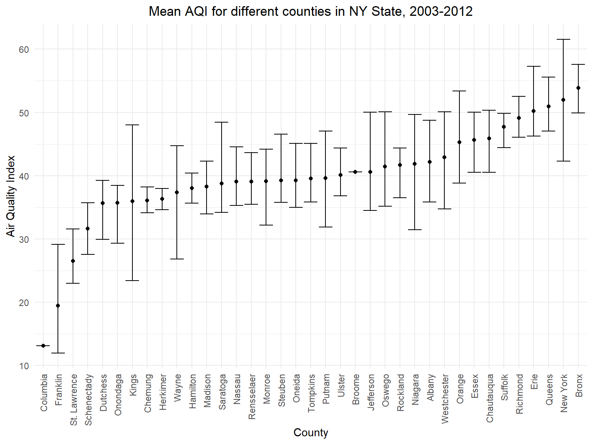
- This graph is based on mean air quality among 10 years in different
counties. According to this graph, we can directly find the top 5
counties with worst air quality(
Bronx,New York,Queens,ErieandRichmond) and top 5 counties with best air quality(Columbia,Franklin,St. Lawrence,SchenectadyandDutchess)
Figure 3: AQI by counties in NY State on map
air_county_df =
aqi_year_df %>%
group_by(state_code, county_code,county) %>%
summarize(
aqi_all = mean(aqi_mean),
max = max(aqi_mean),
min = min(aqi_mean)
) %>%
mutate(
fips = str_c(state_code,county_code)
)## `summarise()` has grouped output by 'state_code', 'county_code'. You can
## override using the `.groups` argument.county_plot_map =
plot_usmap(regions = "county", include = c("NY"), data = air_county_df, values = "aqi_all", labels = TRUE, label_color = "white") +
scale_fill_continuous(
low = "white", high = "Red", name = "Air Quality Index", label = scales::comma, limits = c(0,60)
) +
labs(
title = "AQI by counties in NY State on mapp"
)+
theme(legend.position = "right")
county_plot_map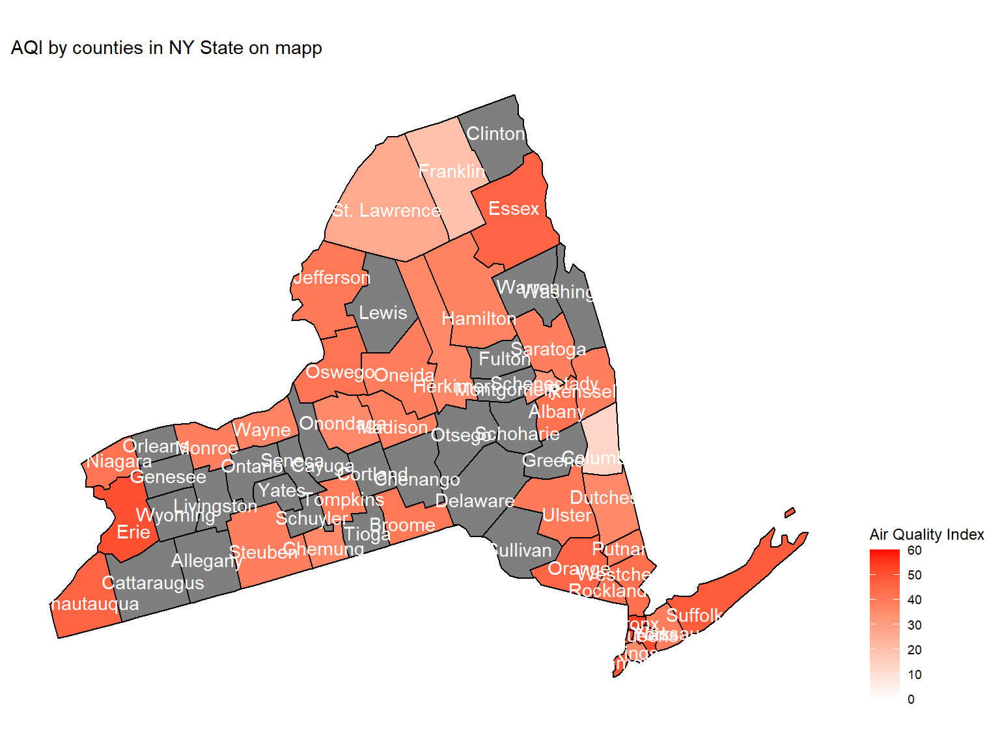
- Maps can help us directly view the air quality in counties. This map is based on mean air quality index among 10 years.
Figure 4: Unhealthy air quality days by counties in NY State, 2003-2012
air_quality_day_df =
air_daily_df %>%
group_by(state_code, county_code,county) %>%
mutate(
aqi_status = case_when(
category %in% c("Good", "Moderate") ~ "Healthy",
category %in% c("Unhealthy for Sensitive Groups", "Unhealthy", "Very Unhealthy") ~ "Unhealthy"
)
)
Unhealthy_air_graph =
air_quality_day_df %>%
filter(aqi_status == "Unhealthy") %>%
group_by(county) %>%
summarize(
unhealthy_days = n()
) %>%
mutate(
county = fct_reorder(county, unhealthy_days)
) %>%
ggplot(aes(y = county, x = unhealthy_days, fill = unhealthy_days)) +
geom_col() +
labs(
title = "Unhealthy air quality days by counties in NY State, 2003-2012",
x = "Unhealthy air quality days",
y = "County"
) +
scale_fill_viridis(option = "turbo")
Unhealthy_air_graph - According to the classification, the air is defined as unhealthy
when air quality index is higher than 100. Based on the graph, we can
know that top 5 counties with the most unhealthy air quality days are
Suffolk,Chautauqua,Richmond,ErieandWestchester.
Type of Pollutants in each counties
Defining pollutants
Figure 5: Defining pollutants distribution among 10 years in NY State
pollutants_graph =
air_quality_day_df %>%
group_by(defining_parameter) %>%
summarize(
pollutants = n()
) %>%
mutate(
defining_parameter = fct_reorder(defining_parameter, pollutants)
) %>%
ggplot(aes(x = defining_parameter, y = pollutants, fill = pollutants)) +
geom_col() +
labs(
title = "Defining pollutants distribution among 10 years in NY State",
x = "Defining pollutants",
y = "days"
) +
scale_fill_viridis(option = "turbo")
pollutants_graph
- Defining pollutants is the most important pollutants in one day in a
place. If there is no other pollutants that exceeds the control line,
the defining pollutants is
Ozone. Based on the graph, we can know that except forOzone,PM2.5andNO2are pollutants that affect NY state in past 10 years.
Figure 6: Defining pollutants distribution in unhealthy air quality days among 10 years in NY State
Unhealthy_pollutants_graph =
air_quality_day_df %>%
filter(aqi_status == "Unhealthy") %>%
group_by(defining_parameter) %>%
summarize(
pollutants = n()
) %>%
mutate(
defining_parameter = fct_reorder(defining_parameter, pollutants)
) %>%
ggplot(aes(x = defining_parameter, y = pollutants, fill = pollutants)) +
geom_col() +
labs(
title = "Defining pollutants distribution in unhealthy air quality days among 10 years in NY State",
x = "Defining pollutants",
y = "Unhealthy air quality days"
) +
scale_fill_viridis(option = "turbo")
Unhealthy_pollutants_graph
- There are nearly 3000 unhealthy days in total for counties in past 10 years.
- Based on the graph, we can know that
OzoneandPM2.5are main defining pollutants during unhealthy air days.
Ozone
Figure 7: Mean Ozone by county in NY state, 2003-2012, by counties
ozone_year_df =
air_daily_df %>%
select(state_code, county_code, state, county, year, mean_ozone) %>%
group_by(state_code, county_code,county,year) %>%
summarize(
ozone_mean = mean(mean_ozone)
) %>%
drop_na(ozone_mean)## `summarise()` has grouped output by 'state_code', 'county_code', 'county'. You
## can override using the `.groups` argument.ozone_graph =
ozone_year_df %>%
group_by(county) %>%
ggplot(aes(x = year, y = ozone_mean, color = county)) +
geom_point(alpha=.3) +
geom_line() +
labs(
title = "Mean Ozone by county in NY state, 2003-2012, by counties",
x = "Year",
y = "Mean Ozone"
)+
scale_x_continuous(breaks = 2003:2012 )+
scale_color_viridis(
name = "County",
discrete = TRUE
)
ozone_graph- The United States Environmental Protection Agency test ground-level
ozone. Thus, when
ozoneis increasing, air quality is worse. Based on the graph, it can be sen thatozoneConcentration is increasing among 10 years. - We can also find that some counties are with a lower
ozoneconcentration among 10 years, such asNew York,BronxandQueens. However, some counties are with higherozoneconcentration, for example,Tompkins,RensselaerandChautauqua.
Figure 8: Ozone by counties on map
ozone_county_df =
ozone_year_df %>%
group_by(state_code, county_code,county) %>%
summarize(
ozone_all = mean(ozone_mean),
max = max(ozone_mean),
min = min(ozone_mean)
) %>%
mutate(
fips = str_c(state_code,county_code)
) ## `summarise()` has grouped output by 'state_code', 'county_code'. You can
## override using the `.groups` argument.ozone_county_plot_map =
plot_usmap(regions = "county", include = c("NY"), data = ozone_county_df, values = "ozone_all", labels = TRUE, label_color = "white") +
scale_fill_continuous(
low = "white", high = "Blue", name = "Air Quality Index", label = scales::comma, limits = c(0,0.04)
) +
labs(
title = "Ozone by counties on map"
)+
theme(legend.position = "right")
ozone_county_plot_map
- Maps can help us directly view the
ozoneconcentration in counties. This map is based on mean ozone concentration among 10 years. According to the map, we can see thatEssex,UlsterandChautauquaare with the highest ozone concentration among 10 years.
PM2.5
Figure 9: Days for PM2.5 presence by counties within 10 years
pm2_5_county_df =
air_daily_df %>%
select(state_code, county_code, state, county, year, mean_pm2_5) %>%
drop_na(mean_pm2_5) %>%
group_by(state_code, county_code,county) %>%
summarize(
pm2_5 = n(),
pm2_5_all = mean(mean_pm2_5),
max = max(mean_pm2_5),
min = min(mean_pm2_5)
) %>%
ungroup() %>%
arrange(pm2_5) %>%
mutate(
county = fct_reorder(county, pm2_5)
)## `summarise()` has grouped output by 'state_code', 'county_code'. You can
## override using the `.groups` argument.pm2_5_county_graph =
ggplot(pm2_5_county_df, aes(y = county, x = pm2_5, fill = pm2_5)) +
geom_col() +
labs(
title = "Days for PM2.5 presence by counties within 10 years",
x = "Days when PM2.5 can be detected",
y = "County"
) +
scale_fill_viridis(option = "turbo")
pm2_5_county_graph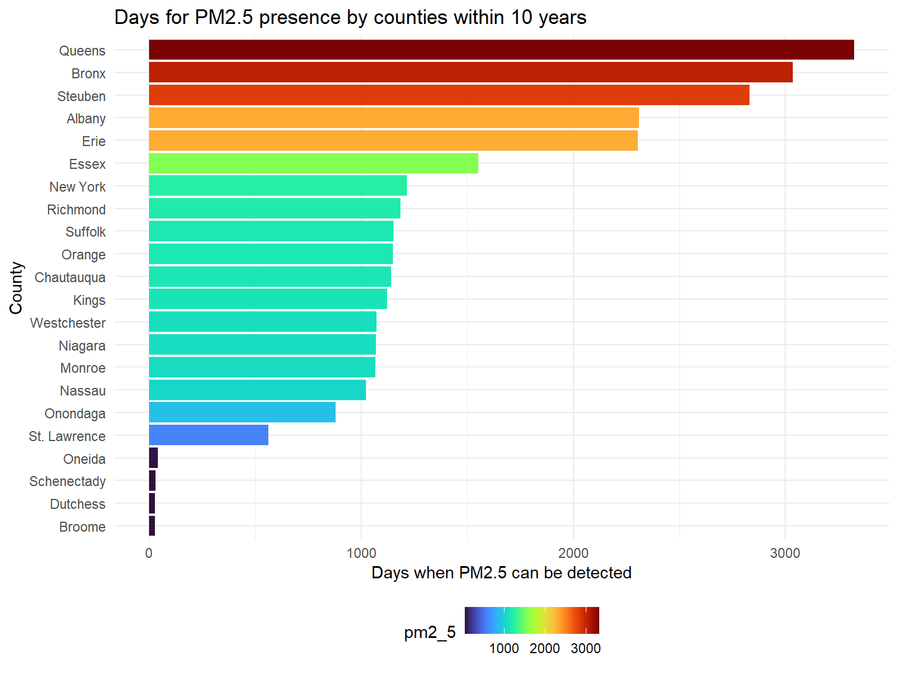
PM2.5is a harmful pollutant that will affect human health. According to the result,Queens,Bronx,Steuben,AlbanyandErieare counties with most PM2.5, whileSt. Lawrence,Oneida,Schenectady,DutchessandBroomeare hard to detect PM2.5.
Figure 10: PM2.5 distribution by counties within 10 years
pm2_5_range_df =
pm2_5_county_df %>%
mutate(
county = fct_reorder(county, pm2_5_all)
)
pm2_5_county_range_graph =
pm2_5_range_df %>%
group_by(county) %>%
ggplot(aes(x = county, y = pm2_5_all)) +
geom_point()+
geom_errorbar(mapping = aes(ymin = min, ymax = max)) +
labs( x = "County", y = "PM2.5", title = "PM2.5 distribution by counties within 10 years") +
theme(plot.title = element_text(hjust = 0.5)) +
theme(axis.text.x = element_text(angle = 90, vjust = 0.5, hjust = 1))
pm2_5_county_range_graph- According to the error bar graph, we can know that there isn’t much
difference for mean PM2.5 concentration among different counties in 10
years, but we can find that the ranges for PM2.5 concentration are
different.
Queensis the county with the highest PM2.5 observation.
Asthma and heart disease in NY state
Asthma
Figure 11: Trend of the rate for people who have asthma history in NY state among 10 years
asthma_history_df =
brfss_air_df %>%
mutate(
fips = str_c(state_code.x,county_code)
) %>%
group_by(year) %>%
count(
year, asthma_status
) %>%
mutate(
percent = n/sum(n),
asthma_status = as.factor(asthma_status)
) %>%
drop_na(asthma_status)
asthma_history_graph =
asthma_history_df %>%
filter(asthma_status != "3") %>%
group_by(asthma_status) %>%
ggplot(aes(x = year, y = percent, group = asthma_status, color = asthma_status)) +
geom_smooth()+
geom_point()+
scale_fill_viridis(option = "viridis")+
labs(
title = "Trend of the rate for people who have asthma history in NY state among 10 years",
x = "Year",
y = "Percent of people who have asthma",
color = "Asthma Status"
) +
scale_x_continuous(breaks = 2003:2012 )
asthma_history_graph## `geom_smooth()` using method = 'loess' and formula 'y ~ x'
- In the graph, it can be seen that we have two Asthma Status.
Asthma 1stands forPeople who currently have asthmawhileAsthma 2stands forPeople who formerly have asthma. - According to the graph, we can know that the percentage of people who currently have asthma is higher than the percentage of people who formerly have asthma.
- While the percentage of people who formerly have asthma is decreasing, the percentage of people who currently have asthma is increasing among 10 years.
Figure 12: Map of the percentage of people who currently have asthma among 10 years
asthma_now_county_df =
brfss_air_df %>%
mutate(
fips = str_c(state_code.x,county_code)
) %>%
group_by(state_code.x, county_code,county,fips) %>%
count(
county,asthma_status
) %>%
mutate(
percent = n/sum(n)
) %>%
filter(asthma_status == "1") %>%
spread(asthma_status, percent)
asthma_now_county_plot_map =
plot_usmap(regions = "county", include = c("NY"), data = asthma_now_county_df, values = "1", labels = TRUE, label_color = "White") +
scale_fill_continuous(
low = "white", high = "Orange", name = "Percentage", label = scales::comma, limits = c(0.05,0.17)
) +
labs(
title = "Map of the percentage of people who currently have asthma among 10 years"
) +
theme(legend.position = "right")
asthma_now_county_plot_map
- To directly view the percentage of people who currently have asthma,
we create a map. According to the map, we can see that
Franklin,Jefferson,SteubenandBronxare with highest percentage of people who currently have asthma.
Figure 13: Trend of average doctor visits for urgent treatment of worsening asthma symptoms in counties among 10 years
asthma_visit_df =
brfss_air_df %>%
drop_na(asthma_visit) %>%
filter(asthma_visit != 0) %>%
group_by(state_code.x, county_code,county) %>%
summarize(
mean_asthma_visit = mean(asthma_visit),
max_asthma_visit = max(asthma_visit),
min_asthma_visit = min(asthma_visit)
) %>%
ungroup() %>%
arrange(mean_asthma_visit) %>%
mutate(
county = fct_reorder(county, mean_asthma_visit)
)## `summarise()` has grouped output by 'state_code.x', 'county_code'. You can
## override using the `.groups` argument.asthma_visit_graph =
asthma_visit_df %>%
ggplot(aes(x = county, y = mean_asthma_visit)) +
geom_point()+
geom_errorbar(mapping = aes(ymin = min_asthma_visit, ymax = max_asthma_visit )) +
labs( x = "County", y = "Average Doctor Visits for Asthma", title = "Average doctor visits for urgent treatment of worsening asthma symptoms among 10 years") +
theme(plot.title = element_text(hjust = 0.5)) +
theme(axis.text.x = element_text(angle = 90, vjust = 0.5, hjust = 1))
asthma_visit_graph
- According to the graph, we can know that people in
Richmond,OneidaandKingsare with more than 5 average doctor visits for asthma. - It seems that average doctor visits doesn’t have relationship with the percentage of people who currently have asthma. Counties which have the highest percentage of patients don’t have the highest average doctor visits for asthma.
Heart disease
Figure 14: Trend of the percentage of people who have any heart disease in NY state among 10 years
hd_history_df =
brfss_air_df %>%
mutate(
fips = str_c(state_code.x,county_code),
heart_disease = ifelse(coronary_heart_disease == "1" | heart_attack == "1" | stroke == "1", "1", "0")
) %>%
group_by(year) %>%
count(
year, heart_disease
) %>%
mutate(
percent = n/sum(n),
heart_disease = as.factor(heart_disease)
) %>%
drop_na(heart_disease)
hd_history_graph =
hd_history_df %>%
filter(heart_disease == "1") %>%
ggplot(aes(x = year, y = percent)) +
geom_smooth()+
geom_point()+
scale_fill_viridis(option = "viridis")+
labs(
title = "Trend of the percentage of people who have any heart disease in NY state among 10 years",
x = "Year",
y = "Percent of people who have heart disease"
) +
scale_x_continuous(breaks = 2003:2012 )
hd_history_graph## `geom_smooth()` using method = 'loess' and formula 'y ~ x'
- BRFSS also includes heart disease variables. Previous research suggests that asthma might be associated with heart disease. Thus, we try to find some relationships using our dataset.
- According to this graph, we can know that the percentage of people who have heart disease(including stroke, coronary heart disease and heart attack) is increasing among 10 years.
Figure 15: Map of the percentage for people who have heart disease among 10 years
hd_county_df =
brfss_air_df %>%
mutate(
fips = str_c(state_code.x,county_code),
heart_disease = ifelse(coronary_heart_disease == "1" | heart_attack == "1" | stroke == "1", "1", "0")
) %>%
group_by(state_code.x, county_code,county,fips) %>%
count(
year, heart_disease
) %>%
mutate(
percent = n/sum(n),
heart_disease = as.factor(heart_disease)
) %>%
drop_na(heart_disease)
hd_county_plot_map =
plot_usmap(regions = "county", include = c("NY"), data = hd_county_df, values = "percent", labels = TRUE, label_color = "white") +
scale_fill_continuous(
low = "white", high = "Purple", name = "Percentage", label = scales::comma, limits = c(0,0.8)
) +
labs(
title = "Map of the percentage for people who have heart disease among 10 years"
) +
theme(legend.position = "right")
hd_county_plot_map 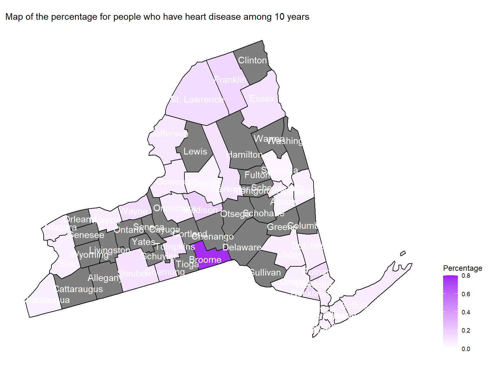
- To directly view the percentage of people who have heart disease
among 10 years, we create a map. According to the map, we can see that
Broomeare with highest percentage of people who have heart disease among 10 years.
Asthma and air quality
Figure 17: Association between air quality and Asthma emergency visit
- In order to find the association between air quality and asthma emergency visit times, we use several different predictors and plot graphs.
- Based on the graphs, we can find that
air quality indexandozoneare with no relationships with asthma emergency visit times;CO,NO,SO2andPM2.5are with positive relationships with asthma emergency visit times. Thus, we can use those predictors for our modeling.
air quality index
asthma_air_graph1 =
brfss_air2_df %>%
ggplot(aes(x = mean_aqi_month, y = asthma_emergency)) +
geom_point()+
geom_smooth()
asthma_air_graph1## `geom_smooth()` using method = 'gam' and formula 'y ~ s(x, bs = "cs")'Ozone
asthma_air_graph2 =
brfss_air2_df %>%
ggplot(aes(x = mean_ozone_month, y = asthma_emergency)) +
geom_point()+
geom_smooth()
asthma_air_graph2## `geom_smooth()` using method = 'gam' and formula 'y ~ s(x, bs = "cs")'CO
asthma_air_graph3 =
brfss_air2_df %>%
ggplot(aes(x = mean_co_month, y = asthma_emergency)) +
geom_point()+
geom_smooth()
asthma_air_graph3## `geom_smooth()` using method = 'gam' and formula 'y ~ s(x, bs = "cs")'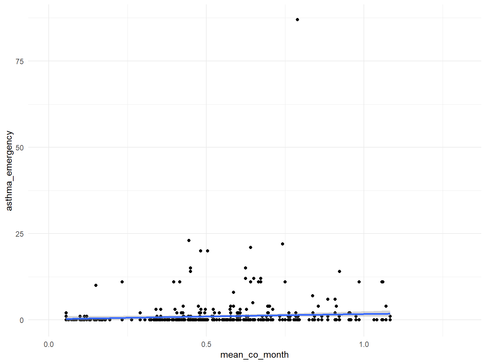
NO2
asthma_air_graph4 =
brfss_air2_df %>%
ggplot(aes(x = mean_no2_month, y = asthma_emergency)) +
geom_point()+
geom_smooth()
asthma_air_graph4## `geom_smooth()` using method = 'gam' and formula 'y ~ s(x, bs = "cs")'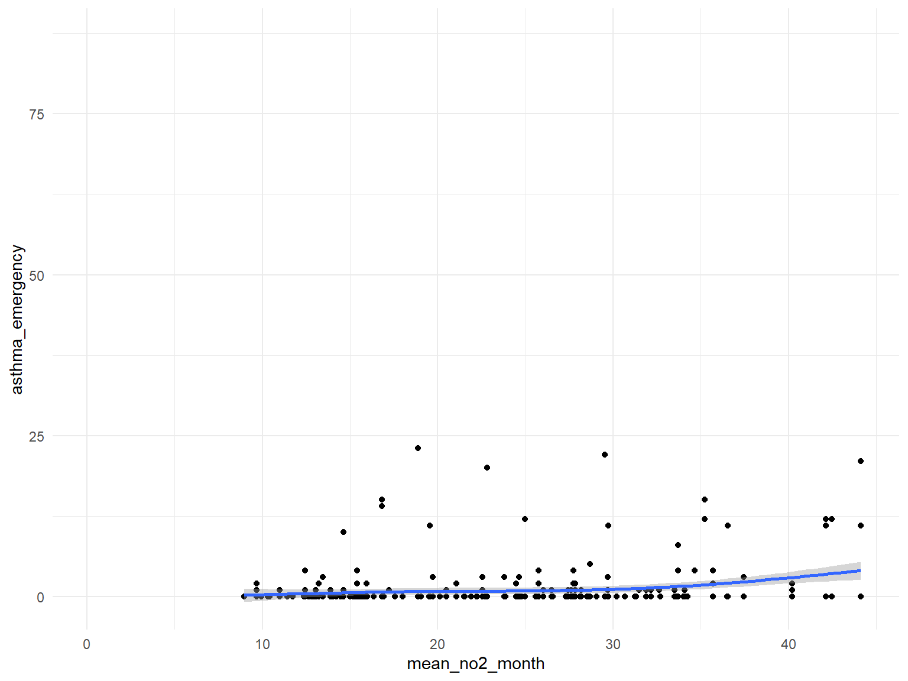
SO2
asthma_air_graph5 =
brfss_air2_df %>%
ggplot(aes(x = mean_so2_month, y = asthma_emergency)) +
geom_point()+
geom_smooth()
asthma_air_graph5## `geom_smooth()` using method = 'gam' and formula 'y ~ s(x, bs = "cs")'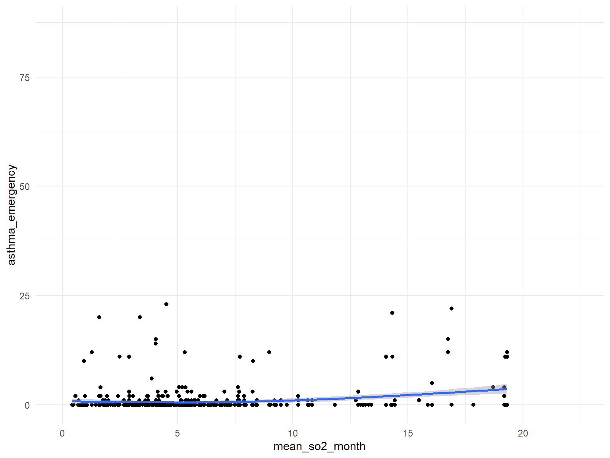
PM2.5
asthma_air_graph6 =
brfss_air2_df %>%
ggplot(aes(x = mean_pm2_5_month, y = asthma_emergency)) +
geom_point()+
geom_smooth()
asthma_air_graph6## `geom_smooth()` using method = 'gam' and formula 'y ~ s(x, bs = "cs")'Figure 18: Association between air quality and Asthma doctor visit
- In order to find the association between air quality and asthma doctor visit times, we use several different predictors and plot graphs.
- Based on the graphs, we can find that all predictors are with no relationships with asthma doctor visit times.
air quality index
asthma_air_graph1 =
brfss_air2_df %>%
ggplot(aes(x = mean_aqi_month, y = asthma_visit)) +
geom_point()+
geom_smooth()
asthma_air_graph1## `geom_smooth()` using method = 'gam' and formula 'y ~ s(x, bs = "cs")'Ozone
asthma_air_graph2 =
brfss_air2_df %>%
ggplot(aes(x = mean_ozone_month, y = asthma_visit)) +
geom_point()+
geom_smooth()
asthma_air_graph2## `geom_smooth()` using method = 'gam' and formula 'y ~ s(x, bs = "cs")'CO
asthma_air_graph3 =
brfss_air2_df %>%
ggplot(aes(x = mean_co_month, y = asthma_visit)) +
geom_point()+
geom_smooth()
asthma_air_graph3## `geom_smooth()` using method = 'gam' and formula 'y ~ s(x, bs = "cs")'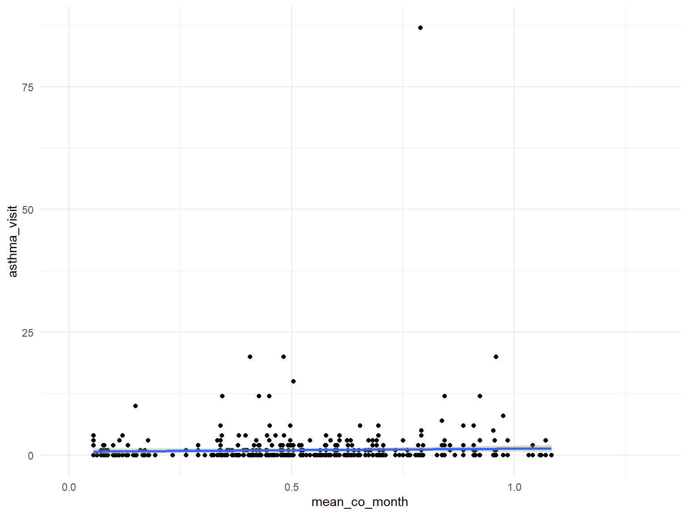
NO2
asthma_air_graph4 =
brfss_air2_df %>%
ggplot(aes(x = mean_no2_month, y = asthma_visit)) +
geom_point()+
geom_smooth()
asthma_air_graph4## `geom_smooth()` using method = 'gam' and formula 'y ~ s(x, bs = "cs")'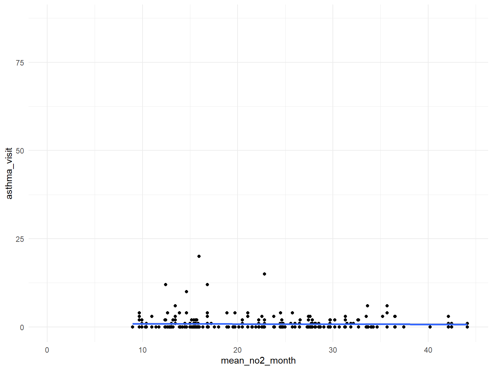
SO2
asthma_air_graph5 =
brfss_air2_df %>%
ggplot(aes(x = mean_so2_month, y = asthma_visit)) +
geom_point()+
geom_smooth()
asthma_air_graph5## `geom_smooth()` using method = 'gam' and formula 'y ~ s(x, bs = "cs")'PM2.5
asthma_air_graph6 =
brfss_air2_df %>%
ggplot(aes(x = mean_pm2_5_month, y = asthma_visit)) +
geom_point()+
geom_smooth()
asthma_air_graph6## `geom_smooth()` using method = 'gam' and formula 'y ~ s(x, bs = "cs")'Statistical Analysis
Tests of Statistical Analysis
Pearson’s Chi-squared test
Create two categories of aqi values Those aqi values < 50 are categorized as good *Those aqi values >= 50 are categorized as not good
- H0:The proportion of the individuals who experienced asthma now is the same across two aqi categories.
- H1:The proportion of the individuals who experienced asthma now is not the same across two aqi categories.
asthma_df2 = asthma_df2 %>%
mutate(
aqi_cat =
case_when(
mean_aqi_month <= 50 ~ "Good",
mean_aqi_month > 50 ~ "Not Good",
)
)
chisq.test(asthma_df2$aqi_cat, asthma_df2$asthma_now, correct=FALSE)##
## Pearson's Chi-squared test
##
## data: asthma_df2$aqi_cat and asthma_df2$asthma_now
## X-squared = 2.0033, df = 1, p-value = 0.157- X-squared = 2.0033, df = 1, p-value = 0.157
Welch Two Sample t-test
H0:The average number of the visits to asthma emergency is the same for aqi good category and aqi not good category. H1:The average number of the visits to asthma emergency is not the same for aqi good category and aqi not good category.
asthma_df2_ttest = asthma_df2 %>%
mutate(
aqi_cat =
case_when(
mean_aqi_month <= 50 ~ "Good",
mean_aqi_month > 50 ~ "Not_Good",
)
) %>%
pivot_wider(
names_from = "aqi_cat",
values_from = "asthma_emergency"
)
t.test(asthma_df2_ttest$Good, asthma_df2_ttest$Not_Good)##
## Welch Two Sample t-test
##
## data: asthma_df2_ttest$Good and asthma_df2_ttest$Not_Good
## t = -2.5689, df = 421.41, p-value = 0.01055
## alternative hypothesis: true difference in means is not equal to 0
## 95 percent confidence interval:
## -1.3715692 -0.1824764
## sample estimates:
## mean of x mean of y
## 0.718845 1.495868- t = -2.5689, df = 421.41, p-value = 0.01055
- alternative hypothesis: true difference in means is not equal to 0
- 95 percent confidence interval:
- -1.3715692 -0.1824764
- sample estimates:
- mean of x mean of y
- 0.718845 1.495868
*The p-value is less than 0.01 so we can conclude that the average number of the visits to asthma emergency is not the same for aqi good category and aqi not good category.
Chi-squared test on asthma_now & heart disease
- H0: The proportion of the individuals who experienced heart diseases is the same across those who had asthma now and those who did not have asthma now .
- H1: The proportion of the individuals who experienced heart diseases is not the same across those who had asthma now and those who did not have asthma now .
asthma_df2_chi = asthma_df2 %>%
mutate(
heart_disease = ifelse(coronary_heart_disease == "1" | heart_attack == "1" | stroke == "1", "1", "0")
)
chisq.test(asthma_df2_chi$heart_disease, asthma_df2_chi$asthma_now, correct=FALSE)##
## Pearson's Chi-squared test
##
## data: asthma_df2_chi$heart_disease and asthma_df2_chi$asthma_now
## X-squared = 54.976, df = 1, p-value = 1.22e-13- X-squared = 54.976, df = 1, p-value = 1.22e-13
- The p-value is less than 0.05. So we can conclude that the proportion of the individuals who experienced heart disease is not the same in those who had asthma now and those who did not have asthma now.
Proportion Test
- Now we want to see whether having asthma now is am equally common occurrence within the residents of each county. To fufil this goal, we would conduct a proportion test.
H0:The proportion of the individuals who experienced asthma now is the same across all counties. H1:The proportion of the individuals who experienced asthma now is not the same across all counties.
asthma_now_1 =
asthma_df2 %>%
drop_na(asthma_now) %>%
group_by(county) %>%
filter(asthma_now==1) %>%
count(asthma_now==1)
asthma_now_all =
asthma_df2 %>%
drop_na(asthma_now) %>%
group_by(county) %>%
count()
data_for_proptest =
left_join(asthma_now_1, asthma_now_all, by = "county")
prop.test(data_for_proptest$n.x, data_for_proptest$n.y)##
## 36-sample test for equality of proportions without continuity
## correction
##
## data: data_for_proptest$n.x out of data_for_proptest$n.y
## X-squared = 83.022, df = 35, p-value = 8.893e-06
## alternative hypothesis: two.sided
## sample estimates:
## prop 1 prop 2 prop 3 prop 4 prop 5 prop 6 prop 7 prop 8
## 0.6945813 0.7164179 0.6666667 0.8073394 0.7368421 0.6266667 0.7641326 0.7272727
## prop 9 prop 10 prop 11 prop 12 prop 13 prop 14 prop 15 prop 16
## 0.7575758 0.8666667 0.8082192 0.7090164 0.4827586 0.6976744 0.6505747 0.6563758
## prop 17 prop 18 prop 19 prop 20 prop 21 prop 22 prop 23 prop 24
## 0.7680000 0.7785714 0.7564576 0.6782178 0.8059701 0.7222222 0.6617916 0.7383178
## prop 25 prop 26 prop 27 prop 28 prop 29 prop 30 prop 31 prop 32
## 0.6770186 0.6571429 0.7482014 0.7415730 0.7462687 0.8333333 0.6954813 0.7000000
## prop 33 prop 34 prop 35 prop 36
## 0.6967213 0.8620690 0.6851312 0.7271330X-squared = 83.022, df = 35, p-value = 8.893e-06
alternative hypothesis: two.sided
sample estimates:
prop 1 prop 2 prop 3 prop 4 prop 5 prop 6 prop 7 prop 8 prop 9 prop 10 prop 11 prop 12 prop 13
0.6945813 0.7164179 0.6666667 0.8073394 0.7368421 0.6266667 0.7641326 0.7272727 0.7575758 0.8666667 0.8082192 0.7090164 0.4827586
prop 14 prop 15 prop 16 prop 17 prop 18 prop 19 prop 20 prop 21 prop 22 prop 23 prop 24 prop 25 prop 26
0.6976744 0.6505747 0.6563758 0.7680000 0.7785714 0.7564576 0.6782178 0.8059701 0.7222222 0.6617916 0.7383178 0.6770186 0.6571429
prop 27 prop 28 prop 29 prop 30 prop 31 prop 32 prop 33 prop 34 prop 35 prop 36
0.7482014 0.7415730 0.7462687 0.8333333 0.6954813 0.7000000 0.6967213 0.8620690 0.6851312 0.7271330
From the above results, p-values are small and so we we can say that the proportions of people getting asthma now are different across boroughs.
Statistical Modeling
Linear Regression model on Asthma Emergency Visits
asthma_df2 =
read_csv("./data/brfss_with_air2.csv") %>%
mutate(
#outcome
asthma = as.numeric(asthma),
asthma_now = as.numeric(asthma_now),
#predictors below
mean_aqi_month = as.numeric(mean_aqi_month),
mental_health = as.numeric(mental_health),
physical_health = as.numeric(physical_health),
county = as.factor(county),
age = as.factor(age),
race = as.factor(race),
smoker = as.factor(smoker),
income = as.factor(income)
)- Based on our exploratory analysis, We first ran a linear regression
model with
asthma_emergencyas the outcome variable and check the correlation withmean_so2_month,mean_no2_month,mean_co_monthandmean_pm2_5_monthadjusting for other predictors.
SO2
linear_fit_so2_emergency =
asthma_df2 %>%
lm(asthma_emergency ~ mental_health + physical_health + sex + smoker + race + age + income + county + mean_so2_month, data = .) %>%
broom::tidy()
linear_fit_so2_emergency %>%
knitr::kable(digits = 3)| term | estimate | std.error | statistic | p.value |
|---|---|---|---|---|
| (Intercept) | 1.087 | 0.976 | 1.113 | 0.266 |
| mental_health | 0.024 | 0.016 | 1.450 | 0.148 |
| physical_health | 0.013 | 0.015 | 0.890 | 0.374 |
| sex | -0.263 | 0.288 | -0.913 | 0.362 |
| smoker2 | 0.042 | 0.598 | 0.069 | 0.945 |
| smoker3 | 0.570 | 0.434 | 1.314 | 0.189 |
| smoker4 | 0.093 | 0.399 | 0.232 | 0.816 |
| race2 | 0.982 | 0.514 | 1.911 | 0.057 |
| race3 | -0.638 | 0.885 | -0.721 | 0.471 |
| race4 | -1.336 | 2.889 | -0.463 | 0.644 |
| race5 | -0.549 | 2.048 | -0.268 | 0.789 |
| race6 | 0.397 | 1.449 | 0.274 | 0.784 |
| race7 | 0.558 | 0.895 | 0.624 | 0.533 |
| race8 | 0.029 | 0.532 | 0.055 | 0.956 |
| age2 | -1.558 | 0.767 | -2.031 | 0.043 |
| age3 | -0.745 | 0.711 | -1.049 | 0.295 |
| age4 | -0.514 | 0.734 | -0.700 | 0.484 |
| age5 | -0.512 | 0.671 | -0.763 | 0.446 |
| age6 | -0.888 | 0.697 | -1.274 | 0.203 |
| age7 | -0.750 | 0.686 | -1.094 | 0.275 |
| age8 | -0.232 | 0.714 | -0.324 | 0.746 |
| age9 | -1.767 | 0.766 | -2.307 | 0.022 |
| age10 | -0.876 | 0.811 | -1.080 | 0.281 |
| age11 | -1.705 | 0.837 | -2.038 | 0.042 |
| age12 | -0.848 | 0.910 | -0.933 | 0.352 |
| age13 | -1.621 | 1.132 | -1.432 | 0.153 |
| income2 | -0.472 | 0.488 | -0.967 | 0.334 |
| income3 | -0.645 | 0.529 | -1.219 | 0.224 |
| income4 | -1.132 | 0.533 | -2.124 | 0.034 |
| income5 | -1.509 | 0.445 | -3.392 | 0.001 |
| countyBronx | -0.521 | 0.836 | -0.623 | 0.533 |
| countyChautauqua | -0.418 | 1.006 | -0.415 | 0.678 |
| countyErie | 0.360 | 0.686 | 0.524 | 0.601 |
| countyMonroe | 0.010 | 0.700 | 0.014 | 0.989 |
| countyNassau | 0.476 | 0.713 | 0.667 | 0.505 |
| countyNew York | -0.185 | 0.763 | -0.242 | 0.809 |
| countyNiagara | 0.183 | 0.896 | 0.204 | 0.839 |
| countyOnondaga | 0.321 | 0.744 | 0.431 | 0.667 |
| countyQueens | 0.228 | 0.750 | 0.304 | 0.761 |
| countyRensselaer | 0.864 | 0.969 | 0.891 | 0.373 |
| countySchenectady | -0.375 | 1.058 | -0.354 | 0.723 |
| countySuffolk | -0.087 | 0.698 | -0.124 | 0.901 |
| countyUlster | 0.919 | 0.936 | 0.982 | 0.327 |
| mean_so2_month | 0.166 | 0.047 | 3.564 | 0.000 |
NO2
linear_fit_no2_emergency = asthma_df2 %>%
lm(asthma_emergency ~ mental_health + physical_health + sex + smoker + race + age + income + county + mean_no2_month, data = .) %>%
broom::tidy()
linear_fit_no2_emergency %>%
knitr::kable(digits = 3)| term | estimate | std.error | statistic | p.value |
|---|---|---|---|---|
| (Intercept) | -3.547 | 2.132 | -1.664 | 0.097 |
| mental_health | 0.029 | 0.027 | 1.098 | 0.273 |
| physical_health | 0.020 | 0.022 | 0.895 | 0.372 |
| sex | -0.303 | 0.436 | -0.694 | 0.488 |
| smoker2 | 0.800 | 0.900 | 0.890 | 0.375 |
| smoker3 | 1.067 | 0.688 | 1.551 | 0.122 |
| smoker4 | 0.545 | 0.627 | 0.870 | 0.385 |
| race2 | 0.826 | 0.711 | 1.161 | 0.247 |
| race3 | -1.584 | 1.276 | -1.242 | 0.215 |
| race4 | -1.908 | 3.548 | -0.538 | 0.591 |
| race5 | -0.545 | 2.495 | -0.219 | 0.827 |
| race6 | -0.137 | 2.506 | -0.055 | 0.956 |
| race7 | -0.014 | 1.207 | -0.012 | 0.991 |
| race8 | 0.207 | 0.727 | 0.285 | 0.776 |
| age2 | -1.927 | 1.114 | -1.729 | 0.085 |
| age3 | -0.981 | 1.095 | -0.896 | 0.371 |
| age4 | -0.663 | 1.142 | -0.580 | 0.562 |
| age5 | -0.360 | 1.048 | -0.344 | 0.731 |
| age6 | -1.344 | 1.099 | -1.223 | 0.223 |
| age7 | -0.844 | 1.025 | -0.824 | 0.411 |
| age8 | 0.332 | 1.065 | 0.312 | 0.756 |
| age9 | -2.004 | 1.175 | -1.705 | 0.089 |
| age10 | -0.398 | 1.336 | -0.298 | 0.766 |
| age11 | -2.031 | 1.364 | -1.490 | 0.138 |
| age12 | -0.443 | 1.458 | -0.304 | 0.762 |
| age13 | -2.240 | 1.596 | -1.404 | 0.162 |
| income2 | -0.187 | 0.772 | -0.242 | 0.809 |
| income3 | -0.512 | 0.800 | -0.639 | 0.523 |
| income4 | -1.643 | 0.868 | -1.892 | 0.060 |
| income5 | -1.759 | 0.675 | -2.605 | 0.010 |
| countyErie | 2.541 | 1.086 | 2.339 | 0.020 |
| countyNassau | 1.697 | 1.059 | 1.601 | 0.111 |
| countyNew York | -0.864 | 0.935 | -0.924 | 0.357 |
| countyQueens | 0.472 | 0.805 | 0.587 | 0.558 |
| countySuffolk | 2.961 | 1.240 | 2.388 | 0.018 |
| mean_no2_month | 0.195 | 0.056 | 3.473 | 0.001 |
CO
linear_fit_co_emergency = asthma_df2 %>%
lm(asthma_emergency ~ mental_health + physical_health + sex + smoker + race + age + income + county + mean_co_month, data = .) %>%
broom::tidy()
linear_fit_co_emergency %>%
knitr::kable(digits = 3)| term | estimate | std.error | statistic | p.value |
|---|---|---|---|---|
| (Intercept) | 1.183 | 1.146 | 1.033 | 0.302 |
| mental_health | 0.008 | 0.017 | 0.492 | 0.623 |
| physical_health | 0.023 | 0.015 | 1.516 | 0.130 |
| sex | -0.033 | 0.304 | -0.108 | 0.914 |
| smoker2 | 0.052 | 0.592 | 0.088 | 0.930 |
| smoker3 | 0.721 | 0.448 | 1.608 | 0.109 |
| smoker4 | -0.084 | 0.407 | -0.207 | 0.836 |
| race2 | 0.648 | 0.473 | 1.369 | 0.172 |
| race3 | -0.627 | 0.875 | -0.716 | 0.474 |
| race4 | -1.157 | 2.957 | -0.391 | 0.696 |
| race5 | -1.467 | 2.903 | -0.505 | 0.614 |
| race6 | -0.246 | 1.004 | -0.245 | 0.807 |
| race7 | 0.070 | 0.866 | 0.081 | 0.935 |
| race8 | 0.388 | 0.484 | 0.801 | 0.423 |
| age2 | -1.256 | 0.700 | -1.795 | 0.073 |
| age3 | -0.617 | 0.682 | -0.905 | 0.366 |
| age4 | -0.401 | 0.688 | -0.583 | 0.560 |
| age5 | -0.111 | 0.655 | -0.170 | 0.865 |
| age6 | -0.886 | 0.688 | -1.287 | 0.199 |
| age7 | -0.721 | 0.657 | -1.097 | 0.273 |
| age8 | 0.028 | 0.690 | 0.041 | 0.967 |
| age9 | -1.300 | 0.791 | -1.644 | 0.101 |
| age10 | -0.873 | 0.801 | -1.090 | 0.276 |
| age11 | -1.364 | 0.885 | -1.541 | 0.124 |
| age12 | -1.878 | 0.901 | -2.084 | 0.038 |
| age13 | -1.454 | 1.228 | -1.184 | 0.237 |
| income2 | -0.083 | 0.483 | -0.173 | 0.863 |
| income3 | -0.562 | 0.539 | -1.043 | 0.298 |
| income4 | -1.084 | 0.537 | -2.018 | 0.044 |
| income5 | -1.394 | 0.457 | -3.051 | 0.002 |
| countyBronx | -0.050 | 0.946 | -0.052 | 0.958 |
| countyErie | 0.146 | 0.705 | 0.207 | 0.836 |
| countyKings | -1.031 | 1.185 | -0.870 | 0.385 |
| countyMonroe | -0.370 | 0.727 | -0.509 | 0.611 |
| countyNew York | 0.281 | 0.907 | 0.310 | 0.757 |
| countyNiagara | -0.136 | 0.994 | -0.137 | 0.891 |
| countyOnondaga | -0.557 | 0.782 | -0.712 | 0.477 |
| countyQueens | 0.029 | 0.794 | 0.037 | 0.970 |
| countySchenectady | -0.537 | 1.084 | -0.495 | 0.621 |
| countySuffolk | 0.375 | 0.853 | 0.440 | 0.660 |
| mean_co_month | 1.635 | 1.764 | 0.927 | 0.354 |
PM2.5
linear_fit_pm2_5_emergency = asthma_df2 %>%
lm(asthma_emergency ~ mental_health + physical_health + sex + smoker + race + age + income + county + mean_pm2_5_month, data = .)%>%
broom::tidy()
linear_fit_pm2_5_emergency %>%
knitr::kable(digits = 3)| term | estimate | std.error | statistic | p.value |
|---|---|---|---|---|
| (Intercept) | -5.497 | 4.343 | -1.266 | 0.214 |
| mental_health | 0.006 | 0.064 | 0.089 | 0.930 |
| physical_health | -0.042 | 0.051 | -0.812 | 0.422 |
| sex | -0.993 | 1.095 | -0.907 | 0.371 |
| smoker2 | -0.303 | 2.813 | -0.108 | 0.915 |
| smoker3 | 1.580 | 1.875 | 0.843 | 0.405 |
| smoker4 | -0.863 | 1.658 | -0.521 | 0.606 |
| race2 | 3.309 | 1.842 | 1.796 | 0.081 |
| race3 | 1.173 | 2.792 | 0.420 | 0.677 |
| race4 | 4.376 | 4.407 | 0.993 | 0.327 |
| race5 | -0.762 | 3.328 | -0.229 | 0.820 |
| race6 | 2.920 | 5.575 | 0.524 | 0.604 |
| race7 | 1.209 | 2.705 | 0.447 | 0.658 |
| race8 | 3.669 | 2.023 | 1.813 | 0.078 |
| age2 | 3.177 | 2.442 | 1.301 | 0.202 |
| age3 | 1.018 | 2.591 | 0.393 | 0.697 |
| age4 | 1.664 | 2.953 | 0.563 | 0.577 |
| age5 | 1.991 | 2.464 | 0.808 | 0.424 |
| age6 | -0.130 | 2.363 | -0.055 | 0.956 |
| age7 | 1.610 | 2.473 | 0.651 | 0.519 |
| age8 | 4.053 | 2.414 | 1.679 | 0.102 |
| age9 | 2.122 | 3.166 | 0.670 | 0.507 |
| age10 | NA | NA | NA | NA |
| age11 | 0.680 | 4.089 | 0.166 | 0.869 |
| age12 | -1.321 | 3.702 | -0.357 | 0.723 |
| income2 | 0.165 | 1.982 | 0.083 | 0.934 |
| income3 | 2.677 | 1.668 | 1.605 | 0.117 |
| income4 | 2.960 | 2.243 | 1.320 | 0.195 |
| income5 | 1.100 | 1.659 | 0.663 | 0.511 |
| countyOrange | 1.231 | 2.058 | 0.598 | 0.554 |
| countyQueens | -0.083 | 1.820 | -0.046 | 0.964 |
| countyRichmond | 0.832 | 2.008 | 0.414 | 0.681 |
| countySt. Lawrence | 1.867 | 2.519 | 0.741 | 0.463 |
| countySteuben | 3.112 | 5.689 | 0.547 | 0.588 |
| mean_pm2_5_month | 0.237 | 0.219 | 1.081 | 0.287 |
The results show that mean_so2_month, the average SO2 concentration has a positive coefficient of 0.166 with Asthma_emergency occurrence. This means that higher SO2 concentration contributes to Asthma emergency visit times with an 0.166 in cases per unit increase of average SO2 concentration in one month, adjusting for other covariate. The p-value is 0.000, which means that this is significant at a significance level of 0.05.
The results show that mean_no2_month, the average NO2 concentration has a positive coefficient of 0.195 with Asthma_emergency occurrence. This means that higher NO2 concentration contributes to Asthma emergency visit times with an 0.195 in cases per unit increase of average NO2 concentration in one month, adjusting for other covariate. The p-value is 0.001, which means that this is significant at a significance level of 0.05.
The results show that mean_co_month, the average CO concentration has a positive coefficient of 1.64 with Asthma_emergency occurrence. This means that higher CO concentration contributes to Asthma emergency visit times with an 1.64 in cases per unit increase of average CO concentration in one month, adjusting for other covariate. The p-value is 0.354, which means that this is not significant at a significance level of 0.05.
The results show that mean_pm2_5_month, the average PM2.5 concentration has a positive coefficient of 0.237 with Asthma_emergency occurrence. This means that higher PM2.5 concentration contributes to Asthma emergency visit times with an 0.237 in cases per unit increase of average PM2.5 concentration in one month, adjusting for other covariate. The p-value is 0.287, which means that this is not significant at a significance level of 0.05.
Logistic Regression Model on Asthma Status
- We still want to see if there is any relationship between
asthmaandmean_aqi_month. We then conducted a Logistic regression withasthmaas the main outcome varibale and check the relationship betweenmean_aqi_monthwith asthma status. A logistic regression model was used because of the binary outcome variable.
fit_logistic1b =
asthma_df2 %>%
glm(asthma ~ mental_health + physical_health + sex + smoker + race + age + income + county + mean_aqi_month, data = ., family = binomial())
fit_logistic1b %>%
broom::tidy() %>%
mutate(OR = exp(estimate)) %>%
select(term, log_OR = estimate, OR, p.value) %>%
knitr::kable(digits = 3)| term | log_OR | OR | p.value |
|---|---|---|---|
| (Intercept) | -1.123 | 0.325 | 0.000 |
| mental_health | 0.014 | 1.014 | 0.000 |
| physical_health | 0.033 | 1.034 | 0.000 |
| sex | -0.338 | 0.713 | 0.000 |
| smoker2 | 0.160 | 1.173 | 0.024 |
| smoker3 | 0.185 | 1.203 | 0.000 |
| smoker4 | 0.011 | 1.011 | 0.815 |
| race2 | 0.217 | 1.243 | 0.000 |
| race3 | -0.392 | 0.676 | 0.000 |
| race4 | 0.056 | 1.058 | 0.833 |
| race5 | 0.129 | 1.138 | 0.514 |
| race6 | 0.129 | 1.138 | 0.411 |
| race7 | 0.624 | 1.866 | 0.000 |
| race8 | 0.150 | 1.162 | 0.004 |
| age2 | -0.407 | 0.665 | 0.000 |
| age3 | -0.339 | 0.713 | 0.000 |
| age4 | -0.464 | 0.629 | 0.000 |
| age5 | -0.550 | 0.577 | 0.000 |
| age6 | -0.639 | 0.528 | 0.000 |
| age7 | -0.609 | 0.544 | 0.000 |
| age8 | -0.607 | 0.545 | 0.000 |
| age9 | -0.663 | 0.515 | 0.000 |
| age10 | -0.741 | 0.477 | 0.000 |
| age11 | -0.802 | 0.449 | 0.000 |
| age12 | -0.939 | 0.391 | 0.000 |
| age13 | -1.238 | 0.290 | 0.000 |
| income2 | -0.252 | 0.777 | 0.000 |
| income3 | -0.208 | 0.812 | 0.000 |
| income4 | -0.321 | 0.726 | 0.000 |
| income5 | -0.272 | 0.762 | 0.000 |
| countyBronx | -0.058 | 0.943 | 0.592 |
| countyBroome | -0.331 | 0.718 | 0.605 |
| countyChautauqua | -0.223 | 0.800 | 0.131 |
| countyChemung | 0.014 | 1.014 | 0.950 |
| countyDutchess | -0.128 | 0.880 | 0.330 |
| countyErie | -0.153 | 0.858 | 0.135 |
| countyEssex | 0.144 | 1.155 | 0.573 |
| countyFranklin | 0.528 | 1.696 | 0.024 |
| countyHerkimer | 0.013 | 1.013 | 0.957 |
| countyJefferson | 0.193 | 1.213 | 0.247 |
| countyKings | -0.210 | 0.811 | 0.035 |
| countyMadison | 0.168 | 1.183 | 0.449 |
| countyMonroe | 0.003 | 1.003 | 0.980 |
| countyNassau | -0.178 | 0.837 | 0.087 |
| countyNew York | -0.113 | 0.893 | 0.254 |
| countyNiagara | -0.202 | 0.817 | 0.140 |
| countyOneida | 0.062 | 1.064 | 0.641 |
| countyOnondaga | 0.001 | 1.001 | 0.991 |
| countyOrange | 0.185 | 1.204 | 0.126 |
| countyOswego | 0.101 | 1.106 | 0.548 |
| countyPutnam | 0.088 | 1.092 | 0.691 |
| countyQueens | -0.378 | 0.685 | 0.000 |
| countyRensselaer | 0.116 | 1.123 | 0.416 |
| countyRichmond | -0.112 | 0.894 | 0.380 |
| countyRockland | -0.086 | 0.918 | 0.686 |
| countySaratoga | 0.001 | 1.001 | 0.992 |
| countySchenectady | 0.053 | 1.054 | 0.733 |
| countySt. Lawrence | -0.029 | 0.972 | 0.864 |
| countySteuben | 0.102 | 1.107 | 0.570 |
| countySuffolk | -0.207 | 0.813 | 0.041 |
| countyTompkins | 0.248 | 1.281 | 0.143 |
| countyUlster | 0.009 | 1.009 | 0.951 |
| countyWayne | -0.442 | 0.643 | 0.062 |
| countyWestchester | -0.186 | 0.830 | 0.086 |
| mean_aqi_month | 0.000 | 1.000 | 0.985 |
The results show that mean_aqi_month, the average Air quality index value, has an odd ratio of 1 towards Asthma status. This implies that mean_aqi_month does not have any influence on Asthma occurrences within our investigation.
Mapping and Spatial Analysis
- Considering geological factor as an important predictor, we calculated percentage of asthma cases based on their locations with respect to counties in NY state and created maps with their asthma rate based on colors among counties in NY state.If the color is grey, that means there was no respondents in those counties at that year.
Asthma Map
According to the graphs, we can know that: * In 2003,
Chautauqua county is with the most asthma patients. After
that, the percentage decreased until 2009. * After 2008, asthma patients
in Steuben and Chemung were increasing. *
Counties in north of New York, including Jefferson,
St. Lawrence, Franklin and Essex
are also with higher percentage of asthma patients. * Urban counties,
including Bronx, Queens and Erie,
are also with a higher percentage of asthma patients.
2003
asthma_now_county_df1 =
brfss_air_df %>%
mutate(
fips = str_c(state_code.x,county_code)
) %>%
group_by(state_code.x, county_code,county,fips, year) %>%
filter(year == 2003) %>%
count(
county,asthma_status
) %>%
mutate(
percent = n/sum(n)
) %>%
filter(asthma_status == "1") %>%
spread(asthma_status, percent)
asthma_now_county_plot_map =
plot_usmap(regions = "county", include = c("NY"), data = asthma_now_county_df1, values = "1", label = TRUE, label_color = "White") +
scale_fill_continuous(
low = "white", high = "Orange", name = "Percentage", label = scales::comma, limits = c(0.05,0.17)
) +
theme(legend.position = "right")
asthma_now_county_plot_map2004
asthma_now_county_df2 =
brfss_air_df %>%
mutate(
fips = str_c(state_code.x,county_code)
) %>%
group_by(state_code.x, county_code,county,fips, year) %>%
filter(year == 2004) %>%
count(
county,asthma_status
) %>%
mutate(
percent = n/sum(n)
) %>%
filter(asthma_status == "1") %>%
spread(asthma_status, percent)
asthma_now_county_plot_map =
plot_usmap(regions = "county", include = c("NY"), data = asthma_now_county_df2, values = "1", label = TRUE, label_color = "White") +
scale_fill_continuous(
low = "white", high = "Orange", name = "Percentage", label = scales::comma, limits = c(0.05,0.17)
) +
theme(legend.position = "right")
asthma_now_county_plot_map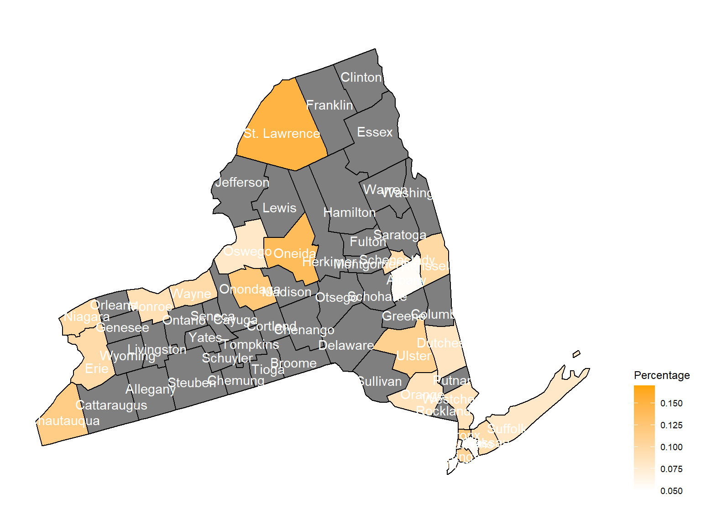
2005
asthma_now_county_df3 =
brfss_air_df %>%
mutate(
fips = str_c(state_code.x,county_code)
) %>%
group_by(state_code.x, county_code,county,fips, year) %>%
filter(year == 2005) %>%
count(
county,asthma_status
) %>%
mutate(
percent = n/sum(n)
) %>%
filter(asthma_status == "1") %>%
spread(asthma_status, percent)
asthma_now_county_plot_map =
plot_usmap(regions = "county", include = c("NY"), data = asthma_now_county_df3, values = "1", label = TRUE, label_color = "White") +
scale_fill_continuous(
low = "white", high = "Orange", name = "Percentage", label = scales::comma, limits = c(0.05,0.17)
) +
theme(legend.position = "right")
asthma_now_county_plot_map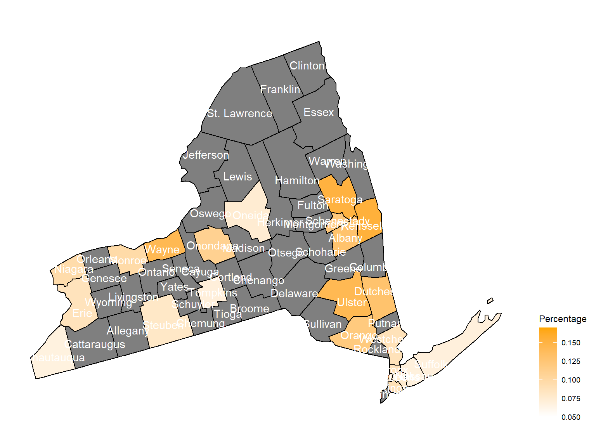
2006
asthma_now_county_df4 =
brfss_air_df %>%
mutate(
fips = str_c(state_code.x,county_code)
) %>%
group_by(state_code.x, county_code,county,fips, year) %>%
filter(year == 2006) %>%
count(
county,asthma_status
) %>%
mutate(
percent = n/sum(n)
) %>%
filter(asthma_status == "1") %>%
spread(asthma_status, percent)
asthma_now_county_plot_map =
plot_usmap(regions = "county", include = c("NY"), data = asthma_now_county_df4, values = "1", label = TRUE, label_color = "White") +
scale_fill_continuous(
low = "white", high = "Orange", name = "Percentage", label = scales::comma, limits = c(0.05,0.17)
) +
theme(legend.position = "right")
asthma_now_county_plot_map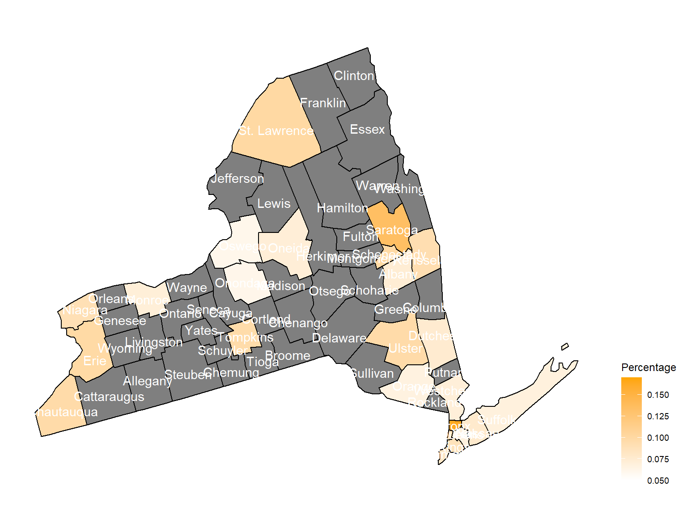
2007
asthma_now_county_df5 =
brfss_air_df %>%
mutate(
fips = str_c(state_code.x,county_code)
) %>%
group_by(state_code.x, county_code,county,fips, year) %>%
filter(year == 2007) %>%
count(
county,asthma_status
) %>%
mutate(
percent = n/sum(n)
) %>%
filter(asthma_status == "1") %>%
spread(asthma_status, percent)
asthma_now_county_plot_map =
plot_usmap(regions = "county", include = c("NY"), data = asthma_now_county_df5, values = "1", label = TRUE, label_color = "White") +
scale_fill_continuous(
low = "white", high = "Orange", name = "Percentage", label = scales::comma, limits = c(0.05,0.17)
) +
theme(legend.position = "right")
asthma_now_county_plot_map2008
asthma_now_county_df6 =
brfss_air_df %>%
mutate(
fips = str_c(state_code.x,county_code)
) %>%
group_by(state_code.x, county_code,county,fips, year) %>%
filter(year == 2008) %>%
count(
county,asthma_status
) %>%
mutate(
percent = n/sum(n)
) %>%
filter(asthma_status == "1") %>%
spread(asthma_status, percent)
asthma_now_county_plot_map =
plot_usmap(regions = "county", include = c("NY"), data = asthma_now_county_df6, values = "1", label = TRUE, label_color = "White") +
scale_fill_continuous(
low = "white", high = "Orange", name = "Percentage", label = scales::comma, limits = c(0.05,0.17)
) +
theme(legend.position = "right")
asthma_now_county_plot_map2009
asthma_now_county_df7 =
brfss_air_df %>%
mutate(
fips = str_c(state_code.x,county_code)
) %>%
group_by(state_code.x, county_code,county,fips, year) %>%
filter(year == 2009) %>%
count(
county,asthma_status
) %>%
mutate(
percent = n/sum(n)
) %>%
filter(asthma_status == "1") %>%
spread(asthma_status, percent)
asthma_now_county_plot_map =
plot_usmap(regions = "county", include = c("NY"), data = asthma_now_county_df7, values = "1", label = TRUE, label_color = "White") +
scale_fill_continuous(
low = "white", high = "Orange", name = "Percentage", label = scales::comma, limits = c(0.05,0.17)
) +
theme(legend.position = "right")
asthma_now_county_plot_map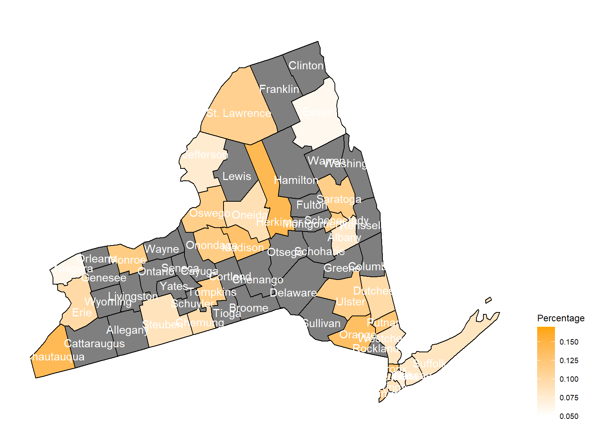
2010
asthma_now_county_df8 =
brfss_air_df %>%
mutate(
fips = str_c(state_code.x,county_code)
) %>%
group_by(state_code.x, county_code,county,fips, year) %>%
filter(year == 2010) %>%
count(
county,asthma_status
) %>%
mutate(
percent = n/sum(n)
) %>%
filter(asthma_status == "1") %>%
spread(asthma_status, percent)
asthma_now_county_plot_map =
plot_usmap(regions = "county", include = c("NY"), data = asthma_now_county_df8, values = "1", label = TRUE, label_color = "White") +
scale_fill_continuous(
low = "white", high = "Orange", name = "Percentage", label = scales::comma, limits = c(0.05,0.17)
) +
theme(legend.position = "right")
asthma_now_county_plot_map2011
asthma_now_county_df9 =
brfss_air_df %>%
mutate(
fips = str_c(state_code.x,county_code)
) %>%
group_by(state_code.x, county_code,county,fips, year) %>%
filter(year == 2011) %>%
count(
county,asthma_status
) %>%
mutate(
percent = n/sum(n)
) %>%
filter(asthma_status == "1") %>%
spread(asthma_status, percent)
asthma_now_county_plot_map =
plot_usmap(regions = "county", include = c("NY"), data = asthma_now_county_df9, values = "1", label = TRUE, label_color = "White") +
scale_fill_continuous(
low = "white", high = "Orange", name = "Percentage", label = scales::comma, limits = c(0.05,0.17)
) +
theme(legend.position = "right")
asthma_now_county_plot_map
2012
asthma_now_county_df10 =
brfss_air_df %>%
mutate(
fips = str_c(state_code.x,county_code)
) %>%
group_by(state_code.x, county_code,county,fips, year) %>%
filter(year == 2012) %>%
count(
county,asthma_status
) %>%
mutate(
percent = n/sum(n)
) %>%
filter(asthma_status == "1") %>%
spread(asthma_status, percent)
asthma_now_county_plot_map =
plot_usmap(regions = "county", include = c("NY"), data = asthma_now_county_df10, values = "1", label = TRUE, label_color = "White") +
scale_fill_continuous(
low = "white", high = "Orange", name = "Percentage", label = scales::comma, limits = c(0.05,0.17)
) +
theme(legend.position = "right")
asthma_now_county_plot_map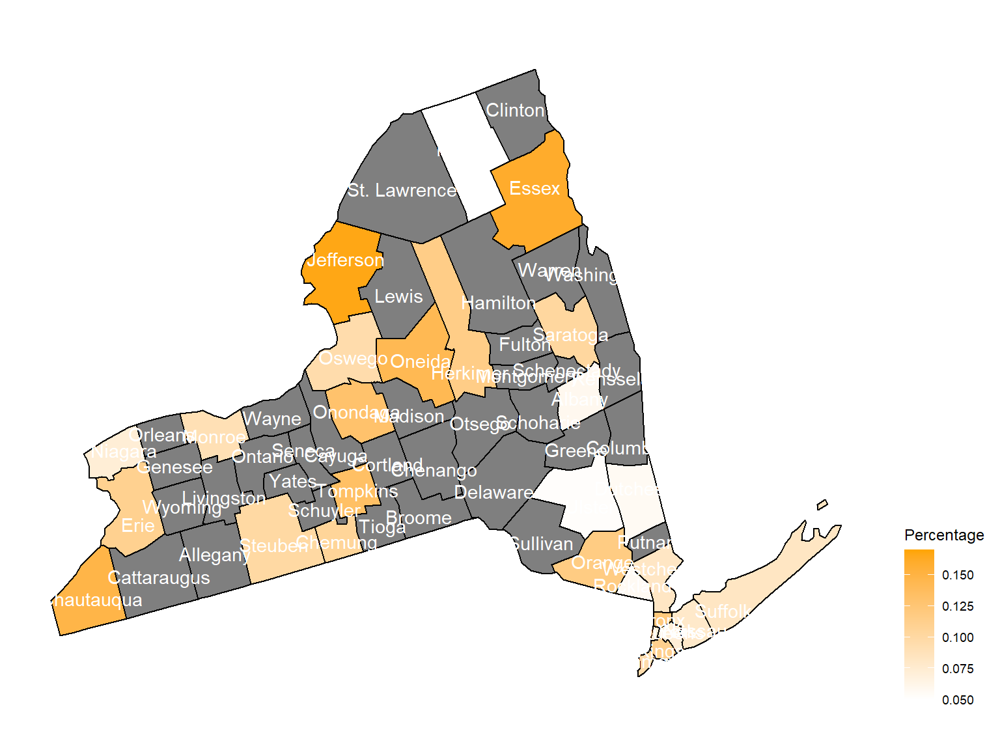
- Air quality index is different among counties in 10years. We created maps with their air quality index on colors among counties in NY state.If the color is grey, that means there was no respondents in those counties at that year.
Air quality index
According to the graphs, we can know that: * Overall, the air quality
index is decreasing in 10 years in all counties, which means that the
air quality is becoming better. * Urban counties, including
Bronx, Queens , New York and
Erie, are with a higher air quality index, which means they
have worse air quality. * Based on the map, we can know that air quality
index might with no relationship with asthma because in northern
counties in NY state, where the asthma percentage are higher, the air
quality are pretty good.
2003
air_county_df1 =
aqi_year_df %>%
group_by(state_code, county_code,county, year) %>%
filter(year == 2003) %>%
summarize(
aqi_all = mean(aqi_mean),
max = max(aqi_mean),
min = min(aqi_mean)
) %>%
mutate(
fips = str_c(state_code,county_code)
)## `summarise()` has grouped output by 'state_code', 'county_code', 'county'. You
## can override using the `.groups` argument.county_plot_map1 =
plot_usmap(regions = "county", include = c("NY"), data = air_county_df1, values = "aqi_all", labels = TRUE, label_color = "White") +
scale_fill_continuous(
low = "white", high = "Red", name = "AQI", label = scales::comma, limits = c(0,60)
) +
theme(legend.position = "right")
county_plot_map12004
air_county_df2 =
aqi_year_df %>%
group_by(state_code, county_code,county, year) %>%
filter(year == 2004) %>%
summarize(
aqi_all = mean(aqi_mean),
max = max(aqi_mean),
min = min(aqi_mean)
) %>%
mutate(
fips = str_c(state_code,county_code)
)## `summarise()` has grouped output by 'state_code', 'county_code', 'county'. You
## can override using the `.groups` argument.county_plot_map2 =
plot_usmap(regions = "county", include = c("NY"), data = air_county_df2, values = "aqi_all", labels = TRUE, label_color = "White") +
scale_fill_continuous(
low = "white", high = "Red", name = "AQI", label = scales::comma, limits = c(0,60)
) +
theme(legend.position = "right")
county_plot_map2
2005
air_county_df3 =
aqi_year_df %>%
group_by(state_code, county_code,county, year) %>%
filter(year == 2005) %>%
summarize(
aqi_all = mean(aqi_mean),
max = max(aqi_mean),
min = min(aqi_mean)
) %>%
mutate(
fips = str_c(state_code,county_code)
)## `summarise()` has grouped output by 'state_code', 'county_code', 'county'. You
## can override using the `.groups` argument.county_plot_map3 =
plot_usmap(regions = "county", include = c("NY"), data = air_county_df3, values = "aqi_all", labels = TRUE, label_color = "White") +
scale_fill_continuous(
low = "white", high = "Red", name = "AQI", label = scales::comma, limits = c(0,60)
) +
theme(legend.position = "right")
county_plot_map32006
air_county_df4 =
aqi_year_df %>%
group_by(state_code, county_code,county, year) %>%
filter(year == 2006) %>%
summarize(
aqi_all = mean(aqi_mean),
max = max(aqi_mean),
min = min(aqi_mean)
) %>%
mutate(
fips = str_c(state_code,county_code)
)## `summarise()` has grouped output by 'state_code', 'county_code', 'county'. You
## can override using the `.groups` argument.county_plot_map4 =
plot_usmap(regions = "county", include = c("NY"), data = air_county_df4, values = "aqi_all", labels = TRUE, label_color = "White") +
scale_fill_continuous(
low = "white", high = "Red", name = "AQI", label = scales::comma, limits = c(0,60)
) +
theme(legend.position = "right")
county_plot_map42007
air_county_df5 =
aqi_year_df %>%
group_by(state_code, county_code,county, year) %>%
filter(year == 2007) %>%
summarize(
aqi_all = mean(aqi_mean),
max = max(aqi_mean),
min = min(aqi_mean)
) %>%
mutate(
fips = str_c(state_code,county_code)
)## `summarise()` has grouped output by 'state_code', 'county_code', 'county'. You
## can override using the `.groups` argument.county_plot_map5 =
plot_usmap(regions = "county", include = c("NY"), data = air_county_df5, values = "aqi_all", labels = TRUE, label_color = "White") +
scale_fill_continuous(
low = "white", high = "Red", name = "AQI", label = scales::comma, limits = c(0,60)
) +
theme(legend.position = "right")
county_plot_map5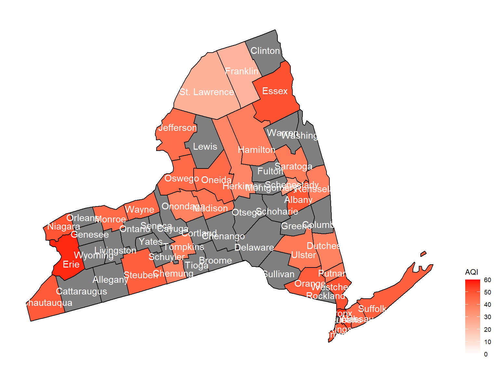
2008
air_county_df6 =
aqi_year_df %>%
group_by(state_code, county_code,county, year) %>%
filter(year == 2008) %>%
summarize(
aqi_all = mean(aqi_mean),
max = max(aqi_mean),
min = min(aqi_mean)
) %>%
mutate(
fips = str_c(state_code,county_code)
)## `summarise()` has grouped output by 'state_code', 'county_code', 'county'. You
## can override using the `.groups` argument.county_plot_map6 =
plot_usmap(regions = "county", include = c("NY"), data = air_county_df6, values = "aqi_all", labels = TRUE, label_color = "White") +
scale_fill_continuous(
low = "white", high = "Red", name = "AQI", label = scales::comma, limits = c(0,60)
) +
theme(legend.position = "right")
county_plot_map6
2009
air_county_df7 =
aqi_year_df %>%
group_by(state_code, county_code,county, year) %>%
filter(year == 2009) %>%
summarize(
aqi_all = mean(aqi_mean),
max = max(aqi_mean),
min = min(aqi_mean)
) %>%
mutate(
fips = str_c(state_code,county_code)
)## `summarise()` has grouped output by 'state_code', 'county_code', 'county'. You
## can override using the `.groups` argument.county_plot_map7 =
plot_usmap(regions = "county", include = c("NY"), data = air_county_df7, values = "aqi_all", labels = TRUE, label_color = "White") +
scale_fill_continuous(
low = "white", high = "Red", name = "AQI", label = scales::comma, limits = c(0,60)
) +
theme(legend.position = "right")
county_plot_map7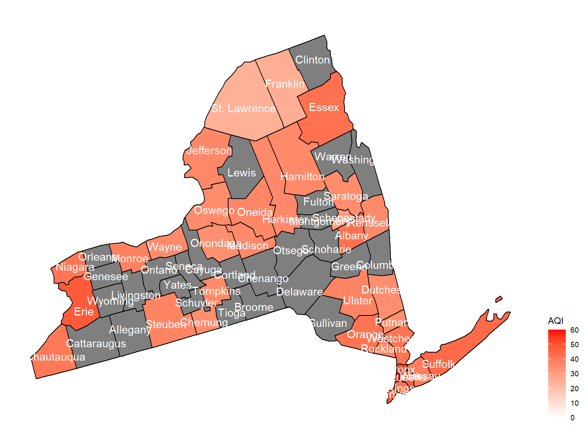
2010
air_county_df8 =
aqi_year_df %>%
group_by(state_code, county_code,county, year) %>%
filter(year == 2010) %>%
summarize(
aqi_all = mean(aqi_mean),
max = max(aqi_mean),
min = min(aqi_mean)
) %>%
mutate(
fips = str_c(state_code,county_code)
)## `summarise()` has grouped output by 'state_code', 'county_code', 'county'. You
## can override using the `.groups` argument.county_plot_map8 =
plot_usmap(regions = "county", include = c("NY"), data = air_county_df8, values = "aqi_all", labels = TRUE, label_color = "White") +
scale_fill_continuous(
low = "white", high = "Red", name = "AQI", label = scales::comma, limits = c(0,60)
) +
theme(legend.position = "right")
county_plot_map82011
air_county_df9 =
aqi_year_df %>%
group_by(state_code, county_code,county, year) %>%
filter(year == 2011) %>%
summarize(
aqi_all = mean(aqi_mean),
max = max(aqi_mean),
min = min(aqi_mean)
) %>%
mutate(
fips = str_c(state_code,county_code)
)## `summarise()` has grouped output by 'state_code', 'county_code', 'county'. You
## can override using the `.groups` argument.county_plot_map9 =
plot_usmap(regions = "county", include = c("NY"), data = air_county_df9, values = "aqi_all", labels = TRUE, label_color = "White") +
scale_fill_continuous(
low = "white", high = "Red", name = "AQI", label = scales::comma, limits = c(0,60)
) +
theme(legend.position = "right")
county_plot_map9
2012
air_county_df10 =
aqi_year_df %>%
group_by(state_code, county_code,county, year) %>%
filter(year == 2012) %>%
summarize(
aqi_all = mean(aqi_mean),
max = max(aqi_mean),
min = min(aqi_mean)
) %>%
mutate(
fips = str_c(state_code,county_code)
)## `summarise()` has grouped output by 'state_code', 'county_code', 'county'. You
## can override using the `.groups` argument.county_plot_map10 =
plot_usmap(regions = "county", include = c("NY"), data = air_county_df10, values = "aqi_all", labels = TRUE, label_color = "White") +
scale_fill_continuous(
low = "white", high = "Red", name = "AQI", label = scales::comma, limits = c(0,60)
) +
theme(legend.position = "right")
county_plot_map10Findings and Summary
- Franklin county has the lowest AQI of about 18 throughout years 2003-2012.
- The AQI’s generally remain at similar levels across years
- The western and eastern regions generally have higher AQI values which indicate higher pollution and more health concerns compared to central areas of NY State. Some possible explanations include more transits and more factories.
- Asthma is most prevalent in Franklin county at a rate of approximately 0.17
- Heart Disease is most prevalent in Broome county at a rate of approximately 0.8
- PM2.5 particles are present at an average about 10μg/cm³ in counties across NY state
- Queens and Bronx counties have the most presence of PM2.5 particles, over 3000 days within the 10 year range(that means almost every day!)
- Suffolk County ranks #1 with more than 200 unhealthy days across the years
Statistical Analysis findings:
Statistical tests
- The average number of the visits to asthma emergency is not the same for aqi good category and aqi not good category.
- The proportion of the individuals who experienced heart disease is not the same in those who had asthma now and those who did not have asthma now.
- The proportions of people getting asthma now are different across boroughs.
Statistical modeling
Linear Regression model
- NO2 and SO2 contributes the most to Asthma emergency visits
- CO and PM2.5 have insignificant results based on the test
Logistic Regression model
- AQI has perfect 1 OR with Asthma which implies no correlation
Limitations and Discussion
Limitation
- After 2013, BRFSS datasets does not include county codes and county names. Thus, we can only use datasets from previous 2012. That might be out of dated. To research the association between air quality and asthma disease, researchers should find a dataset with county code or other variables with location information.
- BRFSS is only a survey surveillance with respondents providing their information via phone. It does not include data from hospital or clinics, which will be more precise for our analysis.
- After statistical modeling, we find that air quality index is not associated with asthma status, but find some pollutants are associated with asthma emergency visits. It is likely that asthma is more correlated with personal genetic or personal health status. Besides, some air pollutants that can affect asthma including pollen are not under monitor.
Discussion
- At first, we believed that air quality is correlated with many diseases and we knew that air quality index was a good database for us to analyze. However, the result was not that appealing. We didn’t find any relationship between air quality index and asthma status.
- Luckily we find that still some pollutants can significantly impact on asthma emergency visits, including So2 and No2. That makes sense because those toxic pollutants can harm the whole pulmonary system.
Reflections and Next Step
Reflections
- One way our project can be helpful to the community is that our findings can help the environmental and health department better assess the weight of each of the factors we investigated on and decide how to spend their budget on regulating pollutes and manage air qualities to a higher extent. With better air, we are able to reduce occurrences of many health problems including, but not limited to, Asthma and heart diseases.
Next step
- In order to further analyze the relationship between pollutants, air quality and asthma status. It is better for us to find better database, especially for asthma surveillance.
- In this project, we use
usmappackage to map. This package can illustrate the data at county level. However, it is not flexible for mapping. We need to find a new package, which can not only show the data at county level, but also can change the label size and apply inRshiny.